面渣逆袭-Java SE
Java 概述
1.什么是 Java？
Java 是一门面向对象的编程语言，由 Sun 公司的詹姆斯·高斯林团队于 1995 年推出。吸收了 C++ 语言中大量的优点，但又抛弃了 C++ 中容易出错的地方，如垃圾回收、指针。
同时，Java 又是一门平台无关的编程语言，即一次编译，处处运行。
只需要在对应的平台上安装 JDK，就可以实现跨平台，在 Windows、macOS、Linux 操作系统上运行。
多久开始学 Java 的？
我是从大一下学期开始学习 Java 的，当时已经学完了 C 语言，但苦于 C 语言没有很好的应用方向，就开始学习 Java 了，因为我了解到，绝大多数的互联网公司，包括银行、国企，后端服务都是用 Java 开发的，另外就是，Java 的学习资料非常丰富，就业岗位和薪资待遇都比较理想。
于是就一边学，一边实战，先做了前后端分离的社区项目技术派，接触到了 Spring Boot、MyBatis-Plus、MySQL、Redis、ElasticSearch、MongoDB、Docker、RabbitMQ 等一系列的 Java 技术栈。
后面又做了微服务项目 pmhub，接触到了 Spring Cloud、Nacos、Sentinel、Seata、SkyWalking 等相关技术栈。
平常用什么编程语言？
大一上先学习的 C 语言，大一下半学期开始学习 Java，中间还学过一些 Python 和 JavaScript，但整体的感受上来说还是更喜欢 Java。
因为它可以做的事情太多了，既可以用它来写 Web 后端服务，也可以用它来造一些轮子，比如 MYDB 这个轮子，就是用 Java 完成的，不进加深了我对 MySQL索引、事务、MVCC 的理解，还让我对 Java 的 NIO、多线程、JVM 有了更深的了解。
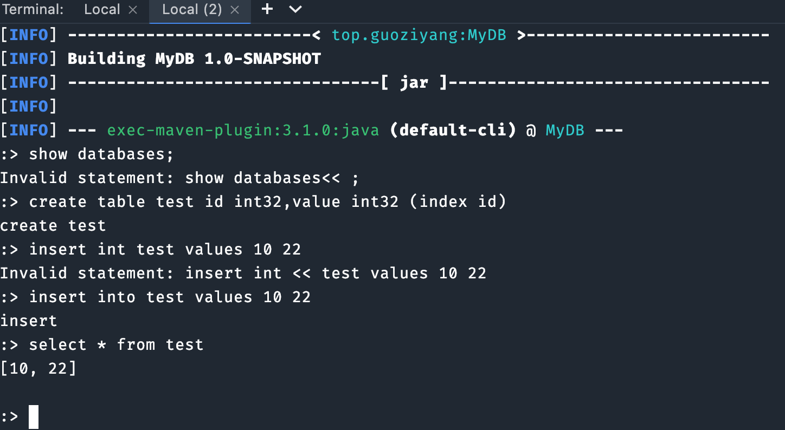
平时是怎么学 Java 的？
一开始，主要是跟着学校的课程走，入门后感觉课程已经满足不了我的求知欲了，于是就开始在 B 站和 GitHub 上找一些优质的视频资源和开源知识库来学习。
比如说《Java 进阶之路》就很适合我的口味，从 Java 的语法、数组&字符串、OOP、集合框架、Java IO、异常处理、网络编程、NIO、并发编程、JVM 等，都有详细的讲解，还有很多手绘图和代码实例，我都跟着动手一步步实现了，感觉收获很大。
后来又读了一遍《Java 编程思想》、《Effective Java》，周志明老师的《深入理解 Java 虚拟机》，以及 JDK 的一些源码，比如说 String、HashMap，还有字节码方面的知识。
再后来就开始做实战项目 MYDB、技术派、PmHub，算是彻底掌握 Java 项目的开发流程了。
Java 语言和 C 语言有哪些区别？
Java 是一种跨平台的编程语言，通过在不同操作系统上安装对应版本的 JVM 以实现“一次编译，处处运行”的目的。而 C 语言需要在不同的操作系统上重新编译。
Java 实现了内存的自动管理，而 C 语言需要使用 malloc 和 free 来手动管理内存。
2.Java 语言有哪些特点？
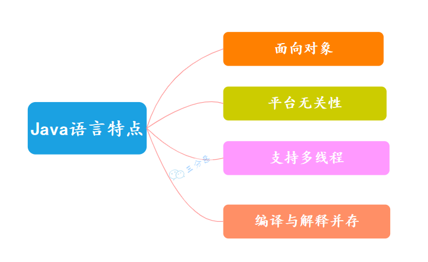
Java 语言的特点有：
- 面向对象。主要是封装，继承，多态。
- 平台无关性。“一次编写，到处运行”，因此采用 Java 语言编写的程序具有很好的可移植性。
- 支持多线程。C++ 语言没有内置的多线程机制，因此必须调用操作系统的 API 来完成多线程程序设计，而 Java 却提供了封装好多线程支持；
- 支持 JIT 编译，也就是即时编译器，它可以在程序运行时将字节码转换为热点机器码来提高程序的运行速度。
- 丰富而完善的工具库。
- 基础类库等；
- 组件、框架类库等；
- 社区建设很完善。
- 版本更新及时
- 社区活跃度高
- 强大的用户群体
- 几乎所有遇到的问题都可以得到解决
3.JVM、JDK 和 JRE 有什么区别？
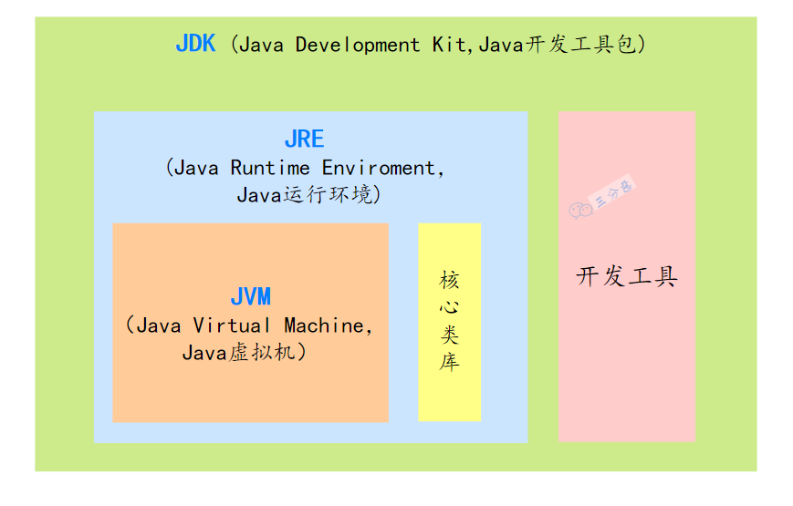
JVM：也就是 Java 虚拟机，是 Java 实现跨平台的关键所在，不同的操作系统有不同的 JVM 实现。JVM 负责将 Java 字节码转换为特定平台的机器码，并执行。
JRE：也就是 Java 运行时环境，包含了运行 Java 程序所必需的库，以及 JVM。
JDK：一套完整的 Java SDK，包括 JRE，编译器 javac、Java 文档生成工具 javadoc、Java 字节码工具 javap 等。为开发者提供了开发、编译、调试 Java 程序的一整套环境。
简单来说，JDK 包含 JRE，JRE 包含 JVM。
4.说说什么是跨平台？原理是什么
所谓的跨平台，是指 Java 语言编写的程序，一次编译后，可以在多个操作系统上运行。
原理是增加了一个中间件 JVM，JVM 负责将 Java 字节码转换为特定平台的机器码，并执行。
5.什么是字节码？采用字节码的好处是什么?
所谓的字节码，就是 Java 程序经过编译后产生的 .class 文件。
Java 程序从源代码到运行需要经过三步：
- 编译：将源代码文件 .java 编译成 JVM 可以识别的字节码文件 .class
- 解释：JVM 执行字节码文件，将字节码翻译成操作系统能识别的机器码
- 执行：操作系统执行二进制的机器码

6.为什么有人说 Java 是“编译与解释并存”的语言？
编译型语言是指编译器针对特定的操作系统，将源代码一次性翻译成可被该平台执行的机器码。
解释型语言是指解释器对源代码进行逐行解释，解释成特定平台的机器码并执行。
举个例子，我想读一本国外的小说，我有两种选择：
- 找个翻译，等翻译将小说全部都翻译成汉语，一次性读完。
- 找个翻译，翻译一段我读一段，慢慢把书读完。
之所以有人说 Java 是“编译与解释并存”的语言，是因为 Java 程序需要先将 Java 源代码文件编译字节码文件，再解释执行。

基础语法
7.Java 有哪些数据类型？
推荐阅读 1：Java 的数据类型 推荐阅读 2：面试官竟然问我这么简单的题目：Java 中 boolean 占多少字节？
Java 的数据类型可以分为两种：基本数据类型和引用数据类型。

基本数据类型有：
①、数值型
- 整数类型（byte、short、int、long）
- 浮点类型（float、double）
②、字符型（char）
③、布尔型（boolean）
它们的默认值和占用大小如下所示：
| 数据类型 | 默认值 | 大小 |
|---|---|---|
| boolean | false | 1 字节或 4 字节 |
| char | '\u0000' | 2 字节 |
| byte | 0 | 1 字节 |
| short | 0 | 2 字节 |
| int | 0 | 4 字节 |
| long | 0L | 8 字节 |
| float | 0.0f | 4 字节 |
| double | 0.0 | 8 字节 |
引用数据类型有：
boolean 类型实际占用几个字节？
这要依据具体的 JVM 实现细节。Java 虚拟机规范中，并没有明确规定 boolean 类型的大小，只规定了 boolean 类型的取值 true 或 false。
boolean: The boolean data type has only two possible values: true and false. Use this data type for simple flags that track true/false conditions. This data type represents one bit of information, but its "size" isn't something that's precisely defined.
我本机的 64 位 JDK 中，通过 JOL 工具查看单独的 boolean 类型，以及 boolean 数组，所占用的空间都是 1 个字节。
给Integer最大值+1，是什么结果？
当给 Integer.MAX_VALUE 加 1 时，会发生溢出，变成 Integer.MIN_VALUE。
int maxValue = Integer.MAX_VALUE;
System.out.println("Integer.MAX_VALUE = " + maxValue); // Integer.MAX_VALUE = 2147483647
System.out.println("Integer.MAX_VALUE + 1 = " + (maxValue + 1)); // Integer.MAX_VALUE + 1 = -2147483648
// 用二进制来表示最大值和最小值
System.out.println("Integer.MAX_VALUE in binary: " + Integer.toBinaryString(maxValue)); // Integer.MAX_VALUE in binary: 1111111111111111111111111111111
System.out.println("Integer.MIN_VALUE in binary: " + Integer.toBinaryString(Integer.MIN_VALUE)); // Integer.MIN_VALUE in binary: 10000000000000000000000000000000
这是因为 Java 的整数类型采用的是二进制补码表示法，溢出时值会变成最小值。
- Integer.MAX_VALUE 的二进制表示是 01111111 11111111 11111111 11111111（32 位）。
- 加 1 后结果变成 10000000 00000000 00000000 00000000，即 -2147483648（Integer.MIN_VALUE）。
8.自动类型转换、强制类型转换了解吗？
推荐阅读：聊聊基本数据类型的转换
当把一个范围较小的数值或变量赋给另外一个范围较大的变量时，会进行自动类型转换；反之，需要强制转换。
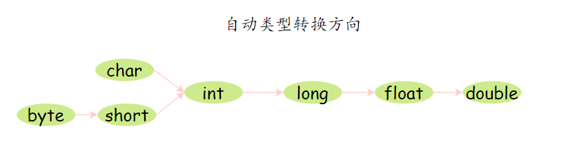
这就好像，小杯里的水倒进大杯没问题，但大杯的水倒进小杯就可能会溢出。
①、float f=3.4，对吗？
不正确。3.4 默认是双精度，将双精度赋值给浮点型属于下转型（down-casting，也称窄化）会造成精度丢失，因此需要强制类型转换float f =(float)3.4;或者写成float f =3.4F
②、short s1 = 1; s1 = s1 + 1；对吗？short s1 = 1; s1 += 1;对吗？
short s1 = 1; s1 = s1 + 1; 会编译出错，由于 1 是 int 类型，因此 s1+1 运算结果也是 int 型，需要强制转换类型才能赋值给 short 型。
而 short s1 = 1; s1 += 1;可以正确编译，因为 s1+= 1;相当于 s1 = (short(s1 + 1); 其中有隐含的强制类型转换。
9.什么是自动拆箱/装箱？
- 装箱：将基本数据类型转换为包装类型，例如 int 转换为 Integer。
- 拆箱：将包装类型转换为基本数据类型。
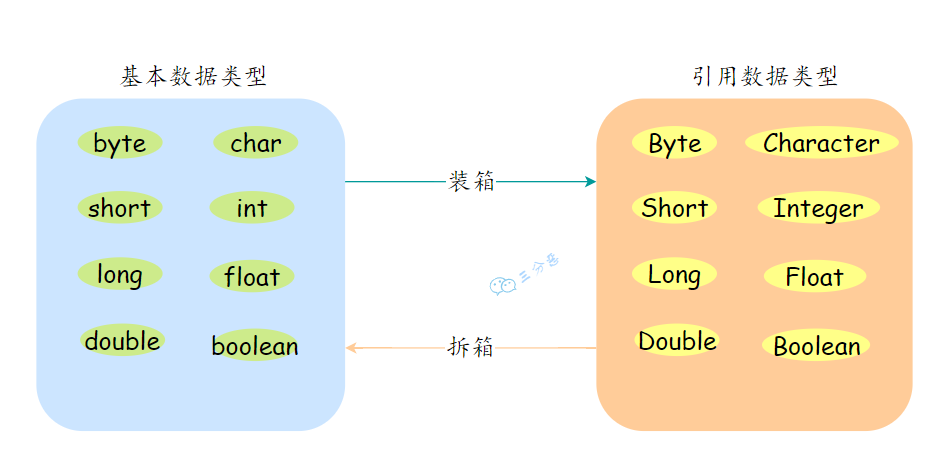
举例：
Integer i = 10; //装箱
int n = i; //拆箱
再换句话说，i 是 Integer 类型，n 是 int 类型；变量 i 是包装器类，变量 n 是基本数据类型。
- Java 面试指南（付费）收录的用友面试原题：对应有哪些包装器类？
- Java 面试指南（付费）收录的京东面经同学 8 面试原题：int和Integer的区别
10.&和&&有什么区别？
& 是 逻辑与。
&&是短路与运算。逻辑与跟短路与的差别是非常大的，虽然二者都要求运算符左右两端的布尔值都是 true，整个表达式的值才是 true。
&&之所以称为短路运算是因为，如果&&左边的表达式的值是 false，右边的表达式会直接短路掉，不会进行运算。
例如在验证用户登录时判定用户名不是 null 而且不是空字符串，应当写为username != null && !username.equals("")，二者的顺序不能交换，更不能用 & 运算符，因为第一个条件如果不成立，根本不能进行字符串的 equals 比较，会抛出 NullPointerException 异常。
注意：逻辑或运算符（|）和短路或运算符（||）的差别也是类似。
2024 年 12 月 23 日 更新到这里。
11.switch 语句能否用在 byte/long/String 类型上？
Java 5 以前 switch(expr) 中，expr 只能是 byte、short、char、int。
从 Java 5 开始，Java 中引入了枚举类型， expr 也可以是 enum 类型。
从 Java 7 开始，expr 还可以是字符串，但是长整型在目前所有的版本中都是不可以的。
12.break,continue,return 的区别及作用？
- break 跳出整个循环，不再执行循环(结束当前的循环体)
- continue 跳出本次循环，继续执行下次循环(结束正在执行的循环 进入下一个循环条件)
- return 程序返回，不再执行下面的代码(结束当前的方法 直接返回)
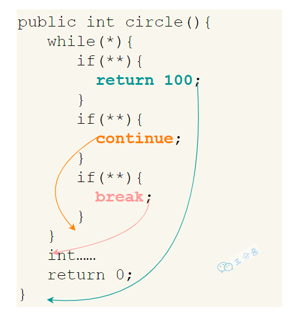
13.用效率最高的方法计算 2 乘以 8？
2 << 3。位运算，数字的二进制位左移三位相当于乘以 2 的三次方。
14.说说自增自减运算？
在写代码的过程中，常见的一种情况是需要某个整数类型变量增加 1 或减少 1，Java 提供了一种特殊的运算符，用于这种表达式，叫做自增运算符（++）和自减运算符（--）。
++和--运算符可以放在变量之前，也可以放在变量之后。
当运算符放在变量之前时(前缀)，先自增/减，再赋值；当运算符放在变量之后时(后缀)，先赋值，再自增/减。
例如，当 b = ++a 时，先自增（自己增加 1），再赋值（赋值给 b）；当 b = a++ 时，先赋值(赋值给 b)，再自增（自己增加 1）。也就是，++a 输出的是 a+1 的值，a++输出的是 a 值。
用一句口诀就是：“符号在前就先加/减，符号在后就后加/减”。
看一下这段代码运行结果？
int i = 1;
i = i++;
System.out.println(i);
答案是 1。有点离谱对不对。
对于 JVM 而言，它对自增运算的处理，是会先定义一个临时变量来接收 i 的值，然后进行自增运算，最后又将临时变量赋给了值为 2 的 i，所以最后的结果为 1。
相当于这样的代码：
int i = 1；
int temp = i;
i++；
i = temp;
System.out.println(i);
这段代码会输出什么？
int count = 0;
for(int i = 0;i < 100;i++)
{
count = count++;
}
System.out.println("count = "+count);
答案是 0。
和上面的题目一样的道理，同样是用了临时变量，count 实际是等于临时变量的值。
int autoAdd(int count)
{
int temp = count;
count = count + 1;
return temp;
}
15.float 是怎么表示小数的？（补充）
2024 年 04 月 21 日增补
推荐阅读：计算机系统基础（四）浮点数
float类型的小数在计算机中是通过 IEEE 754 标准的单精度浮点数格式来表示的。
$$ V = (-1)^S \times M \times 2^E $$
- S：符号位，0 代表正数，1 代表负数；
- M：尾数部分，用于表示数值的精度；比如说 ${1.25 * 2^2}$；1.25 就是尾数；
- R：基数，十进制中的基数是 10，二进制中的基数是 2；
- E：指数部分，例如 $10^{-1}$ 中的 -1 就是指数。
这种表示方法可以将非常大或非常小的数值用有限的位数表示出来，但这也意味着可能会有精度上的损失。
单精度浮点数占用 4 字节（32 位），这 32 位被分为三个部分：符号位、指数部分和尾数部分。
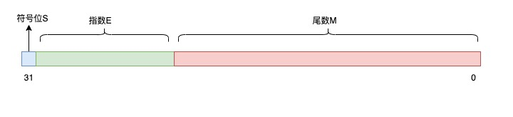
- 符号位（Sign bit）：1 位
- 指数部分（Exponent）：10 位
- 尾数部分（Mantissa，或 Fraction）：21 位
按照这个规则，将十进制数 25.125 转换为浮点数，转换过程是这样的：
- 整数部分：25 转换为二进制是 11001；
- 小数部分：0.125 转换为二进制是 0.001；
- 用二进制科学计数法表示：25.125 = $1.001001 \times 2^4$
符号位 S 是 0，表示正数；指数部分 E 是 4，转换为二进制是 100；尾数部分 M 是 1.001001。
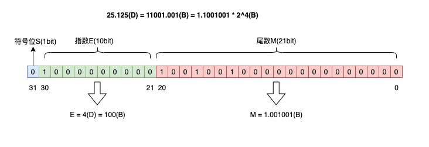
使用浮点数时需要注意，由于精度的限制，进行数学运算时可能会遇到舍入误差，特别是连续运算累积误差可能会变得显著。
对于需要高精度计算的场景（如金融计算），可能需要考虑使用BigDecimal类来避免这种误差。
- Java 面试指南（付费）收录的帆软同学 3 Java 后端一面的原题：float 是怎么表示小数的
16.讲一下数据准确性高是怎么保证的？（补充）
2024 年 04 月 21 日增补
在金融计算中，保证数据准确性有两种方案，一种使用 BigDecimal，一种将浮点数转换为整数 int 进行计算。
肯定不能使用 float 和 double 类型，它们无法避免浮点数运算中常见的精度问题，因为这些数据类型采用二进制浮点数来表示，无法准确地表示，例如 0.1。
BigDecimal num1 = new BigDecimal("0.1");
BigDecimal num2 = new BigDecimal("0.2");
BigDecimal sum = num1.add(num2);
System.out.println("Sum of 0.1 and 0.2 using BigDecimal: " + sum); // 输出 0.3，精确计算
在处理小额支付或计算时，通过转换为较小的货币单位（如分），这样不仅提高了运算速度，还保证了计算的准确性。
int priceInCents = 199; // 商品价格199分
int quantity = 3;
int totalInCents = priceInCents * quantity; // 计算总价
System.out.println("Total price in cents: " + totalInCents); // 输出597分
- Java 面试指南（付费）收录的字节跳动同学 7 Java 后端实习一面的原题：讲一下数据准确性高是怎么保证的？
面向对象
17.⾯向对象和⾯向过程的区别?
面向过程是以过程为核心，通过函数完成任务，程序结构是函数+步骤组成的顺序流程。
面向对象是以对象为核心，通过对象交互完成任务，程序结构是类和对象组成的模块化结构，代码可以通过继承、组合、多态等方式复用。
在技术派实战项目中，像 VO、DTO 都是业务抽象后的对象实体类，而 Service、Controller 则是业务逻辑的实现，这其实就是面向对象的思想。
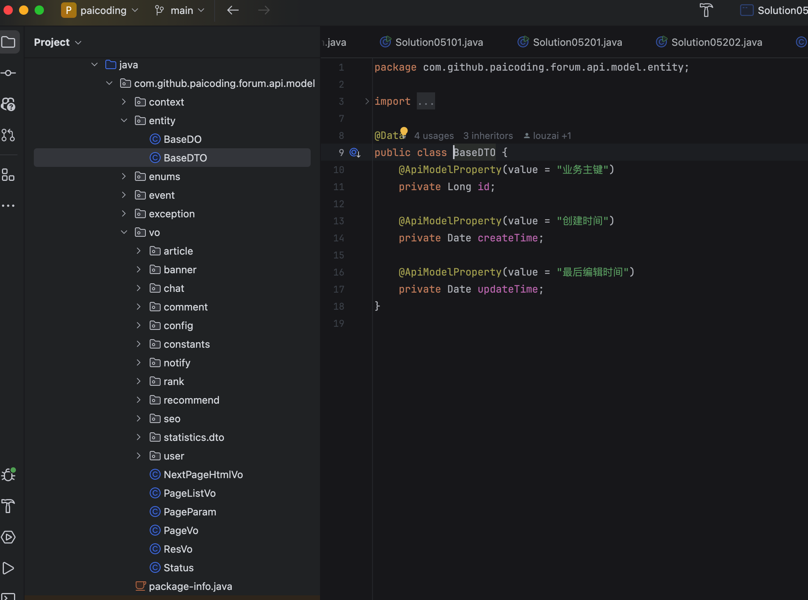
- Java 面试指南（付费）收录的快手同学 2 一面面试原题：面向对象和面向过程的区别？
- Java 面试指南（付费）收录的字节跳动同学 17 后端技术面试原题：面向对象 项目里有哪些面向对象的案例
18.面向对象编程有哪些特性？
推荐阅读：深入理解 Java 三大特性
面向对象编程有三大特性：封装、继承、多态。
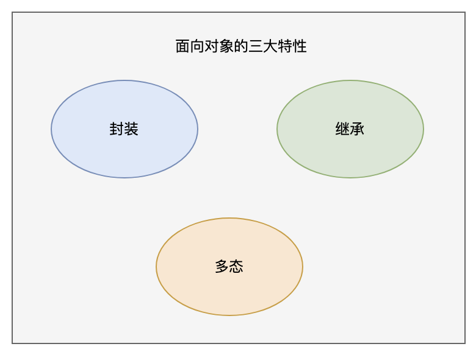
封装是什么？
封装是指将数据（属性，或者叫字段）和操作数据的方法（行为）捆绑在一起，形成一个独立的对象（类的实例）。
class Nvshen {
private String name;
private int age;
public void setName(String name) {
this.name = name;
}
public String getName() {
return name;
}
public void setAge(int age) {
this.age = age;
}
}
可以看得出，女神类对外没有提供 age 的 getter 方法，因为女神的年龄要保密。
所以，封装是把一个对象的属性私有化，同时提供一些可以被外界访问的方法。
继承是什么？
继承允许一个类（子类）继承现有类（父类或者基类）的属性和方法。以提高代码的复用性，建立类之间的层次关系。
同时，子类还可以重写或者扩展从父类继承来的属性和方法，从而实现多态。
class Person {
protected String name;
protected int age;
public void eat() {
System.out.println("吃饭");
}
}
class Student extends Person {
private String school;
public void study() {
System.out.println("学习");
}
}
Student 类继承了 Person 类的属性（name、age）和方法（eat），同时还有自己的属性（school）和方法（study）。
什么是多态？
多态允许不同类的对象对同一消息做出响应，但表现出不同的行为（即方法的多样性）。
多态其实是一种能力——同一个行为具有不同的表现形式；换句话说就是，执行一段代码，Java 在运行时能根据对象类型的不同产生不同的结果。
多态的前置条件有三个：
- 子类继承父类
- 子类重写父类的方法
- 父类引用指向子类的对象
//子类继承父类
class Wangxiaoer extends Wanger {
public void write() { // 子类重写父类方法
System.out.println("记住仇恨，表明我们要奋发图强的心智");
}
public static void main(String[] args) {
// 父类引用指向子类对象
Wanger wanger = new Wangxiaoer();
wanger.write();
}
}
class Wanger {
public void write() {
System.out.println("沉默王二是沙雕");
}
}
为什么Java里面要多组合少继承？
继承适合描述“is-a”的关系，但继承容易导致类之间的强耦合，一旦父类发生改变，子类也要随之改变，违背了开闭原则（尽量不修改现有代码，而是添加新的代码来实现）。
组合适合描述“has-a”或“can-do”的关系，通过在类中组合其他类，能够更灵活地扩展功能。组合避免了复杂的类继承体系，同时遵循了开闭原则和松耦合的设计原则。
举个例子，假设我们采用继承，每种形状和样式的组合都会导致类的急剧增加：
// 基类
class Shape {
public void draw() {
System.out.println("Drawing a shape");
}
}
// 圆形
class Circle extends Shape {
@Override
public void draw() {
System.out.println("Drawing a circle");
}
}
// 带红色的圆形
class RedCircle extends Circle {
@Override
public void draw() {
System.out.println("Drawing a red circle");
}
}
// 带绿色的圆形
class GreenCircle extends Circle {
@Override
public void draw() {
System.out.println("Drawing a green circle");
}
}
// 类似的，对于矩形也要创建多个类
class Rectangle extends Shape {
@Override
public void draw() {
System.out.println("Drawing a rectangle");
}
}
class RedRectangle extends Rectangle {
@Override
public void draw() {
System.out.println("Drawing a red rectangle");
}
}
组合模式更加灵活，可以将形状和颜色分开，松耦合。
// 形状接口
interface Shape {
void draw();
}
// 颜色接口
interface Color {
void applyColor();
}
形状干形状的事情。
// 圆形的实现
class Circle implements Shape {
private Color color; // 通过组合的方式持有颜色对象
public Circle(Color color) {
this.color = color;
}
@Override
public void draw() {
System.out.print("Drawing a circle with ");
color.applyColor(); // 调用颜色的逻辑
}
}
// 矩形的实现
class Rectangle implements Shape {
private Color color;
public Rectangle(Color color) {
this.color = color;
}
@Override
public void draw() {
System.out.print("Drawing a rectangle with ");
color.applyColor();
}
}
颜色干颜色的事情。
// 红色的实现
class RedColor implements Color {
@Override
public void applyColor() {
System.out.println("red color");
}
}
// 绿色的实现
class GreenColor implements Color {
@Override
public void applyColor() {
System.out.println("green color");
}
}
- Java 面试指南（付费）收录的国企零碎面经同学 9 面试原题：Java 面向对象的特性，分别怎么理解的
- Java 面试指南（付费）收录的美团面经同学 4 一面面试原题：Java 面向对象的特点
- Java 面试指南（付费）收录的字节跳动同学 20 测开一面的原题：讲一下 JAVA 的特性，什么是多态
- Java 面试指南（付费）收录的京东面经同学 7 Java 后端技术一面面试原题：面向对象三大特性
19.多态解决了什么问题？（补充）
2024 年 03 月 26 日增补
多态指同一个接口或方法在不同的类中有不同的实现，比如说动态绑定，父类引用指向子类对象，方法的具体调用会延迟到运行时决定。
举例，现在有一个父类 Wanger，一个子类 Wangxiaoer，都有一个 write 方法。现在有一个父类 Wanger 类型的变量 wanger，它在执行 wanger.write() 时，究竟调用父类 Wanger 的 write() 方法，还是子类 Wangxiaoer 的 write() 方法呢？
//子类继承父类
class Wangxiaoer extends Wanger {
public void write() { // 子类覆盖父类方法
System.out.println("记住仇恨，表明我们要奋发图强的心智");
}
public static void main(String[] args) {
// 父类引用指向子类对象
Wanger[] wangers = { new Wanger(), new Wangxiaoer() };
for (Wanger wanger : wangers) {
// 对象是王二的时候输出：勿忘国耻
// 对象是王小二的时候输出：记住仇恨，表明我们要奋发图强的心智
wanger.write();
}
}
}
class Wanger {
public void write() {
System.out.println("勿忘国耻");
}
}
答案是在运行时根据对象的类型进行后期绑定，编译器在编译阶段并不知道对象的类型，但是 Java 的方法调用机制能找到正确的方法体，然后执行，得到正确的结果，这就是多态的作用。
多态的实现原理是什么？
多态通过动态绑定实现，Java 使用虚方法表存储方法指针，方法调用时根据对象实际类型从虚方法表查找具体实现。
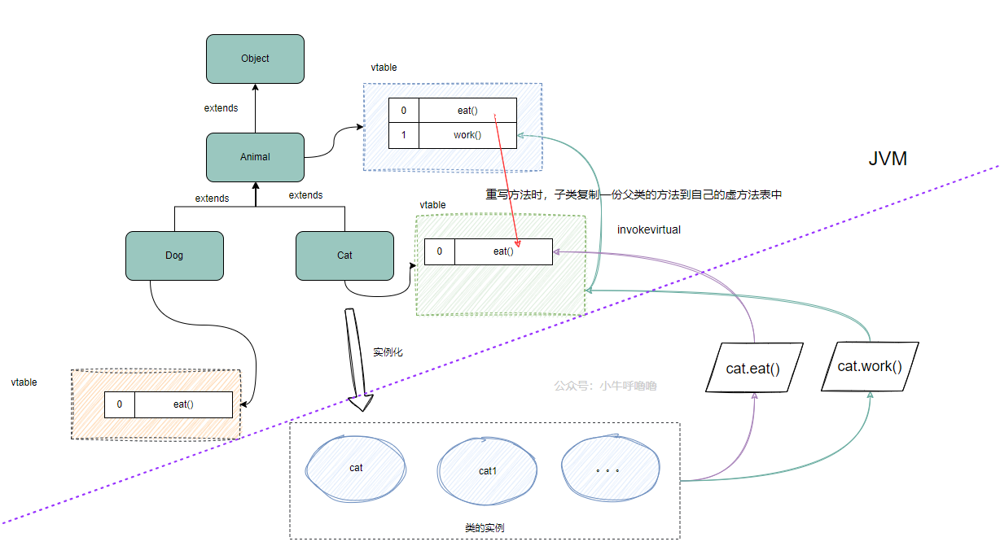
- Java 面试指南（付费）收录的华为面经同学 8 技术二面面试原题：多态的目的，解决了什么问题？
- Java 面试指南（付费）收录的美团面经同学 16 暑期实习一面面试原题：请说说多态、重载和重写
- Java 面试指南（付费）收录的字节跳动面经同学19番茄小说一面面试原题：多态的用法，多态的实现原理
20.重载和重写的区别？
推荐阅读：方法重写 Override 和方法重载 Overload 有什么区别？
如果一个类有多个名字相同但参数个数不同的方法，我们通常称这些方法为方法重载（overload）。如果方法的功能是一样的，但参数不同，使用相同的名字可以提高程序的可读性。
如果子类具有和父类一样的方法（参数相同、返回类型相同、方法名相同，但方法体可能不同），我们称之为方法重写（override）。方法重写用于提供父类已经声明的方法的特殊实现，是实现多态的基础条件。
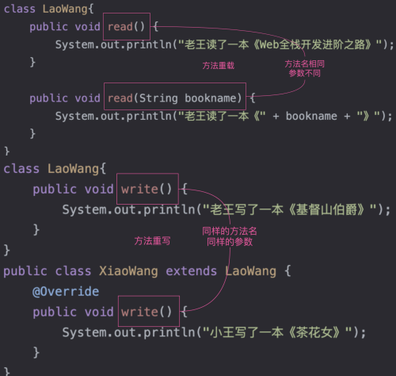
- 方法重载发生在同一个类中，同名的方法如果有不同的参数（参数类型不同、参数个数不同或者二者都不同）。
- 方法重写发生在子类与父类之间，要求子类与父类具有相同的返回类型，方法名和参数列表，并且不能比父类的方法声明更多的异常，遵守里氏代换原则。
什么是里氏代换原则？
里氏代换原则也被称为李氏替换原则（Liskov Substitution Principle, LSP），其规定任何父类可以出现的地方，子类也一定可以出现。
LSP 是继承复用的基石，只有当子类可以替换掉父类，并且单位功能不受到影响时，父类才能真正被复用，而子类也能够在父类的基础上增加新的行为。
这意味着子类在扩展父类时，不应改变父类原有的行为。例如，如果有一个方法接受一个父类对象作为参数，那么传入该方法的任何子类对象也应该能正常工作。
class Bird {
void fly() {
System.out.println("鸟正在飞");
}
}
class Duck extends Bird {
@Override
void fly() {
System.out.println("鸭子正在飞");
}
}
class Ostrich extends Bird {
// Ostrich违反了LSP，因为鸵鸟不会飞，但却继承了会飞的鸟类
@Override
void fly() {
throw new UnsupportedOperationException("鸵鸟不会飞");
}
}
在这个例子中，Ostrich（鸵鸟）类违反了 LSP 原则，因为它改变了父类 Bird 的行为（即飞行）。设计时应该更加谨慎地使用继承关系，确保遵守 LSP 原则。
除了李氏替换原则外，还有其他几个重要的面向对象设计原则，它们共同构成了 SOLID 原则，分别是：
①、单一职责原则（Single Responsibility Principle, SRP），指一个类应该只有一个引起它变化的原因，即一个类只负责一项职责。这样做的目的是使类更加清晰，更容易理解和维护。
②、开闭原则（Open-Closed Principle, OCP），指软件实体应该对扩展开放，对修改关闭。这意味着一个类应该通过扩展来实现新的功能，而不是通过修改已有的代码来实现。
举个例子，在不遵守开闭原则的情况下，有一个需要处理不同形状的绘图功能类。
class ShapeDrawer {
public void draw(Shape shape) {
if (shape instanceof Circle) {
drawCircle((Circle) shape);
} else if (shape instanceof Rectangle) {
drawRectangle((Rectangle) shape);
}
}
private void drawCircle(Circle circle) {
// 画圆形
}
private void drawRectangle(Rectangle rectangle) {
// 画矩形
}
}
每增加一种形状，就需要修改一次 draw 方法，这违反了开闭原则。正确的做法是通过继承和多态来实现新的形状类，然后在 ShapeDrawer 中添加新的 draw 方法。
// 抽象的 Shape 类
abstract class Shape {
public abstract void draw();
}
// 具体的 Circle 类
class Circle extends Shape {
@Override
public void draw() {
// 画圆形
}
}
// 具体的 Rectangle 类
class Rectangle extends Shape {
@Override
public void draw() {
// 画矩形
}
}
// 使用开闭原则的 ShapeDrawer 类
class ShapeDrawer {
public void draw(Shape shape) {
shape.draw(); // 调用多态的 draw 方法
}
}
③、接口隔离原则（Interface Segregation Principle, ISP），指客户端不应该依赖它不需要的接口。这意味着设计接口时应该尽量精简，不应该设计臃肿庞大的接口。
④、依赖倒置原则（Dependency Inversion Principle, DIP），指高层模块不应该依赖低层模块，二者都应该依赖其抽象；抽象不应该依赖细节，细节应该依赖抽象。这意味着设计时应该尽量依赖接口或抽象类，而不是实现类。
- Java 面试指南（付费）收录的帆软同学 3 Java 后端一面的原题：设计方法，李氏原则，还了解哪些设计原则
- Java 面试指南（付费）收录的美团面经同学 16 暑期实习一面面试原题：请说说多态、重载和重写
- Java 面试指南（付费）收录的招银网络科技面经同学 9 Java 后端技术一面面试原题：Java设计模式中的开闭原则，里氏替换了解嘛
21.访问修饰符 public、private、protected、以及默认时的区别？
Java 中，可以使用访问控制符来保护对类、变量、方法和构造方法的访问。Java 支持 4 种不同的访问权限。
- default （即默认，什么也不写）: 在同一包内可见，不使用任何修饰符。可以修饰在类、接口、变量、方法。
- private : 在同一类内可见。可以修饰变量、方法。注意：不能修饰类（外部类）
- public : 对所有类可见。可以修饰类、接口、变量、方法
- protected : 对同一包内的类和所有子类可见。可以修饰变量、方法。注意：不能修饰类（外部类）。
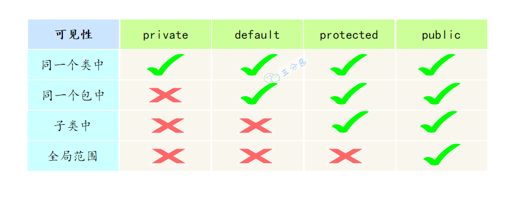
22.this 关键字有什么作用？
this 是自身的一个对象，代表对象本身，可以理解为：指向对象本身的一个指针。
this 的用法在 Java 中大体可以分为 3 种：
-
普通的直接引用，this 相当于是指向当前对象本身
-
形参与成员变量名字重名，用 this 来区分：
public Person(String name,int age){
this.name=name;
this.age=age;
}
- 引用本类的构造方法
23.抽象类和接口有什么区别？
一个类只能继承一个抽象类；但一个类可以实现多个接口。所以我们在新建线程类的时候一般推荐使用实现 Runnable 接口的方式，这样线程类还可以继承其他类，而不单单是 Thread 类。
抽象类符合 is-a 的关系，而接口更像是 has-a 的关系，比如说一个类可以序列化的时候，它只需要实现 Serializable 接口就可以了，不需要去继承一个序列化类。
抽象类更多地是用来为多个相关的类提供一个共同的基础框架，包括状态的初始化，而接口则是定义一套行为标准，让不同的类可以实现同一接口，提供行为的多样化实现。
抽象类可以定义构造方法吗？
可以，抽象类可以有构造方法。
abstract class Animal {
protected String name;
public Animal(String name) {
this.name = name;
}
public abstract void makeSound();
}
public class Dog extends Animal {
private int age;
public Dog(String name, int age) {
super(name); // 调用抽象类的构造函数
this.age = age;
}
@Override
public void makeSound() {
System.out.println(name + " says: Bark");
}
}
接口可以定义构造方法吗？
不能，接口主要用于定义一组方法规范，没有具体的实现细节。
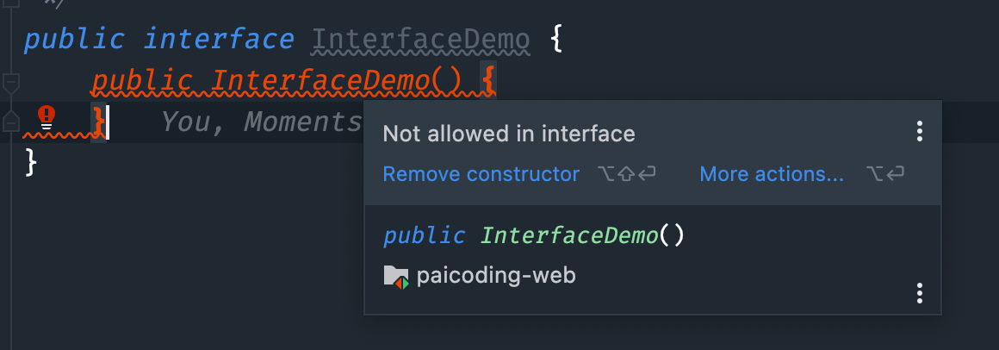
Java支持多继承吗？
Java 不支持多继承，一个类只能继承一个类，多继承会引发菱形继承问题。
class A {
void show() { System.out.println("A"); }
}
class B extends A {
void show() { System.out.println("B"); }
}
class C extends A {
void show() { System.out.println("C"); }
}
// 如果 Java 支持多继承
class D extends B, C {
// 调用 show() 方法时，D 应该调用 B 的 show() 还是 C 的 show()？
}
接口可以多继承吗？
接口可以多继承，一个接口可以继承多个接口，使用逗号分隔。
interface InterfaceA {
void methodA();
}
interface InterfaceB {
void methodB();
}
interface InterfaceC extends InterfaceA, InterfaceB {
void methodC();
}
class MyClass implements InterfaceC {
public void methodA() {
System.out.println("Method A");
}
public void methodB() {
System.out.println("Method B");
}
public void methodC() {
System.out.println("Method C");
}
public static void main(String[] args) {
MyClass myClass = new MyClass();
myClass.methodA();
myClass.methodB();
myClass.methodC();
}
}
在上面的例子中，InterfaceA 和 InterfaceB 是两个独立的接口。
InterfaceC 继承了 InterfaceA 和 InterfaceB，并且定义了自己的方法 methodC。
MyClass 实现了 InterfaceC，因此需要实现 InterfaceA 和 InterfaceB 中的方法 methodA 和 methodB，以及 InterfaceC 中的方法 methodC。
继承和抽象的区别？
继承是一种允许子类继承父类属性和方法的机制。通过继承，子类可以重用父类的代码。
抽象是一种隐藏复杂性和只显示必要部分的技术。在面向对象编程中，抽象可以通过抽象类和接口实现。
抽象类和普通类的区别？
抽象类使用 abstract 关键字定义，不能被实例化，只能作为其他类的父类。普通类没有 abstract 关键字，可以直接实例化。
抽象类可以包含抽象方法和非抽象方法。抽象方法没有方法体，必须由子类实现。普通类智能包含非抽象方法。
abstract class Animal {
// 抽象方法
public abstract void makeSound();
// 非抽象方法
public void eat() {
System.out.println("This animal is eating.");
}
}
class Dog extends Animal {
// 实现抽象方法
@Override
public void makeSound() {
System.out.println("Woof");
}
}
public class Test {
public static void main(String[] args) {
Dog dog = new Dog();
dog.makeSound(); // 输出 "Woof"
dog.eat(); // 输出 "This animal is eating."
}
}
24.成员变量与局部变量的区别有哪些？
-
从语法形式上看：成员变量是属于类的，⽽局部变量是在⽅法中定义的变量或是⽅法的参数；成员变量可以被 public , private , static 等修饰符所修饰，⽽局部变量不能被访问控制修饰符及 static 所修饰；但是，成员变量和局部变量都能被 final 所修饰。
-
从变量在内存中的存储⽅式来看：如果成员变量是使⽤ static 修饰的，那么这个成员变量是属于类的，如果没有使⽤ static 修饰，这个成员变量是属于实例的。对象存于堆内存，如果局部变量类型为基本数据类型，那么存储在栈内存，如果为引⽤数据类型，那存放的是指向堆内存对象的引⽤或者是指向常量池中的地址。
-
从变量在内存中的⽣存时间上看：成员变量是对象的⼀部分，它随着对象的创建⽽存在，⽽局部变量随着⽅法的调⽤⽽⾃动消失。
-
成员变量如果没有被赋初值：则会⾃动以类型的默认值⽽赋值（⼀种情况例外:被 final 修饰的成员变量也必须显式地赋值），⽽局部变量则不会⾃动赋值。
25.static 关键字了解吗？
static 关键字可以用来修饰变量、方法、代码块和内部类，以及导入包。
| 修饰对象 | 作用 |
|---|---|
| 变量 | 静态变量，类级别变量，所有实例共享同一份数据。 |
| 方法 | 静态方法，类级别方法，与实例无关。 |
| 代码块 | 在类加载时初始化一些数据，只执行一次。 |
| 内部类 | 与外部类绑定但独立于外部类实例。 |
| 导入 | 可以直接访问静态成员，无需通过类名引用，简化代码书写，但会降低代码可读性。 |
静态变量和实例变量的区别？
静态变量: 是被 static 修饰符修饰的变量，也称为类变量，它属于类，不属于类的任何一个对象，一个类不管创建多少个对象，静态变量在内存中有且仅有一个副本。
实例变量: 必须依存于某一实例，需要先创建对象然后通过对象才能访问到它。静态变量可以实现让多个对象共享内存。
静态⽅法和实例⽅法有何不同?
类似地。
静态方法：static 修饰的方法，也被称为类方法。在外部调⽤静态⽅法时，可以使⽤"类名.⽅法名"的⽅式，也可以使⽤"对象名.⽅法名"的⽅式。静态方法里不能访问类的非静态成员变量和方法。
实例⽅法：依存于类的实例，需要使用"对象名.⽅法名"的⽅式调用；可以访问类的所有成员变量和方法。
26.final 关键字有什么作用？
可以用来修饰类、方法、变量等：
- 修饰类时， 表明类不能被继承；
- 修饰方法时，表明方法不能被Override（即重写或覆盖）；
- 修饰变量时，表明变量的值不能被改变；
- 修饰引用类型的变量时，表明这个引用类型的变量不能再指向别的对象；至于引用类型指向的对象的内容，是可以随着对象的变化而变化的；
27.final、finally、finalize 的区别？
- 相同点： 三个都属于Java的关键字；
- 不同点：
- final 用来修饰类、方法、变量等；修饰类时，类不可被改变；修饰方法时，方法不能被Override（重写或覆盖）；修饰变量时，变量的值不能被改变（引用类型不能改变指向的内容）；
- finally是异常处理时使用的关键字，常和try块一起搭配使用。无论try是否抛出异常，finally块都会被执行，常用来资源的关闭；
- finalize是超类Object的一个方法，用于垃圾回收时的对象的回收；这个方法是由jvm中负责垃圾回收的线程自动调用的，日常开发中很少使用到；
28.==和 equals 的区别？
在 Java 中，== 操作符和 equals() 方法用于比较两个对象：
①、==：用于比较两个对象的引用，即它们是否指向同一个对象实例。
如果两个变量引用同一个对象实例，== 返回 true，否则返回 false。
对于基本数据类型（如 int, double, char 等），== 比较的是值是否相等。
②、equals() 方法：用于比较两个对象的内容是否相等。默认情况下，equals() 方法的行为与 == 相同，即比较对象引用，如在超类 Object 中：
public boolean equals(Object obj) {
return (this == obj);
}
然而，equals() 方法通常被各种类重写。例如，String 类重写了 equals() 方法，以便它可以比较两个字符串的字符内容是否完全一样。
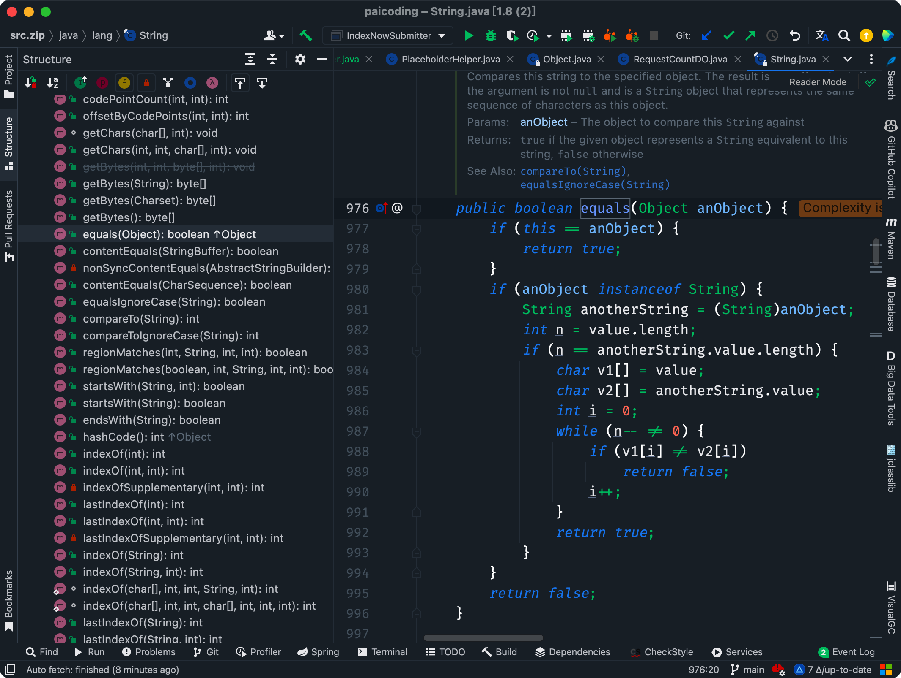
举个例子：
String a = new String("沉默王二");
String b = new String("沉默王二");
// 使用 == 比较
System.out.println(a == b); // 输出 false，因为 a 和 b 引用不同的对象
// 使用 equals() 比较
System.out.println(a.equals(b)); // 输出 true，因为 a 和 b 的内容相同
- Java 面试指南（付费）收录的小公司面经合集同学 1 Java 后端面试原题：==和 equals()有什么区别？
- Java 面试指南（付费）收录的 小公司面经合集好未来测开面经同学 3 测开一面面试原题：==和 equals 的区别
29.为什么重写 equals 时必须重写 hashCode ⽅法？
因为基于哈希的集合类（如 HashMap）需要基于这一点来正确存储和查找对象。
具体地说，HashMap 通过对象的哈希码将其存储在不同的“桶”中，当查找对象时，它需要使用 key 的哈希码来确定对象在哪个桶中，然后再通过 equals() 方法找到对应的对象。
如果重写了 equals()方法而没有重写 hashCode()方法，那么被认为相等的对象可能会有不同的哈希码，从而导致无法在 HashMap 中正确处理这些对象。
什么是 hashCode 方法？
hashCode() 方法的作⽤是获取哈希码，它会返回⼀个 int 整数，定义在 Object 类中， 是一个本地⽅法。
public native int hashCode();
为什么要有 hashCode 方法？
hashCode 方法主要用来获取对象的哈希码，哈希码是由对象的内存地址或者对象的属性计算出来的，它是⼀个 int 类型的整数，通常是不会重复的，因此可以用来作为键值对的建，以提高查询效率。
例如 HashMap 中的 key 就是通过 hashCode 来实现的，通过调用 hashCode 方法获取键的哈希码，并将其与右移 16 位的哈希码进行异或运算。
static final int hash(Object key) {
int h;
return (key == null) ? 0 : (h = key.hashCode()) ^ (h >>> 16);
}
为什么两个对象有相同的 hashcode 值，它们也不⼀定相等？
这主要是由于哈希码（hashCode）的本质和目的所决定的。
哈希码是通过哈希函数将对象中映射成一个整数值，其主要目的是在哈希表中快速定位对象的存储位置。
由于哈希函数将一个较大的输入域映射到一个较小的输出域，不同的输入值（即不同的对象）可能会产生相同的输出值（即相同的哈希码）。
这种情况被称为哈希冲突。当两个不相等的对象发生哈希冲突时，它们会有相同的 hashCode。
为了解决哈希冲突的问题，哈希表在处理键时，不仅会比较键对象的哈希码，还会使用 equals 方法来检查键对象是否真正相等。如果两个对象的哈希码相同，但通过 equals 方法比较结果为 false，那么这两个对象就不被视为相等。
if (p.hash == hash &&
((k = p.key) == key || (key != null && key.equals(k))))
e = p;
hashCode 和 equals 方法的关系？
如果两个对象通过 equals 相等，它们的 hashCode 必须相等。否则会导致哈希表类数据结构（如 HashMap、HashSet）的行为异常。
在哈希表中，如果 equals 相等但 hashCode 不相等，哈希表可能无法正确处理这些对象，导致重复元素或键值冲突等问题。
30.Java 是值传递，还是引用传递？
值传递。即便是引用对象，传递的也是这个引用指向的对象的地址。例如，把一个对象作为参数传递给一个方法，方法实际上接收到的参数是这个对象的引用的地址。
引用类型的变量有什么特点？
从jvm的角度回答。
引用类型在内存中同时具有两块存储区域，一块是句柄，里面存放着引用类型所引用的对象的位置；另一块则是这个对应在内存中的存储区域，里面存放着对象的属性和方法；操作数栈和对象池；
引用类型的变量在jvm进行垃圾回收时，在经过二次标记之后依然存在引用，则可以逃脱回收。
引用类型的变量存储的是对象的地址，而不是对象本身。因此，引用类型的变量在传递时，传递的是对象的地址，也就是说，传递的是引用的值。
31.说说深拷贝和浅拷贝的区别?
推荐阅读：深入理解 Java 浅拷贝与深拷贝
在 Java 中，深拷贝（Deep Copy）和浅拷贝（Shallow Copy）是两种拷贝对象的方式，它们在拷贝对象的方式上有很大不同。
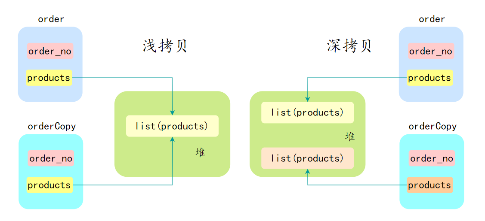
浅拷贝会创建一个新对象，但这个新对象的属性（字段）和原对象的属性完全相同。如果属性是基本数据类型，拷贝的是基本数据类型的值；如果属性是引用类型，拷贝的是引用地址，因此新旧对象共享同一个引用对象。
浅拷贝的实现方式为：实现 Cloneable 接口并重写 clone() 方法。
class Person implements Cloneable {
String name;
int age;
Address address;
public Person(String name, int age, Address address) {
this.name = name;
this.age = age;
this.address = address;
}
@Override
protected Object clone() throws CloneNotSupportedException {
return super.clone();
}
}
class Address {
String city;
public Address(String city) {
this.city = city;
}
}
public class Main {
public static void main(String[] args) throws CloneNotSupportedException {
Address address = new Address("河南省洛阳市");
Person person1 = new Person("沉默王二", 18, address);
Person person2 = (Person) person1.clone();
System.out.println(person1.address == person2.address); // true
}
}
深拷贝也会创建一个新对象，但会递归地复制所有的引用对象，确保新对象和原对象完全独立。新对象与原对象的任何更改都不会相互影响。
深拷贝的实现方式有：手动复制所有的引用对象，或者使用序列化与反序列化。
①、手动拷贝
class Person {
String name;
int age;
Address address;
public Person(String name, int age, Address address) {
this.name = name;
this.age = age;
this.address = address;
}
public Person(Person person) {
this.name = person.name;
this.age = person.age;
this.address = new Address(person.address.city);
}
}
class Address {
String city;
public Address(String city) {
this.city = city;
}
}
public class Main {
public static void main(String[] args) {
Address address = new Address("河南省洛阳市");
Person person1 = new Person("沉默王二", 18, address);
Person person2 = new Person(person1);
System.out.println(person1.address == person2.address); // false
}
}
②、序列化与反序列化
import java.io.*;
class Person implements Serializable {
String name;
int age;
Address address;
public Person(String name, int age, Address address) {
this.name = name;
this.age = age;
this.address = address;
}
public Person deepClone() throws IOException, ClassNotFoundException {
ByteArrayOutputStream bos = new ByteArrayOutputStream();
ObjectOutputStream oos = new ObjectOutputStream(bos);
oos.writeObject(this);
ByteArrayInputStream bis = new ByteArrayInputStream(bos.toByteArray());
ObjectInputStream ois = new ObjectInputStream(bis);
return (Person) ois.readObject();
}
}
class Address implements Serializable {
String city;
public Address(String city) {
this.city = city;
}
}
public class Main {
public static void main(String[] args) throws IOException, ClassNotFoundException {
Address address = new Address("河南省洛阳市");
Person person1 = new Person("沉默王二", 18, address);
Person person2 = person1.deepClone();
System.out.println(person1.address == person2.address); // false
}
}
- Java 面试指南（付费）收录的阿里面经同学 7 高德地图技术一面面试原题：浅拷贝和深拷贝
32.Java 创建对象有哪几种方式？
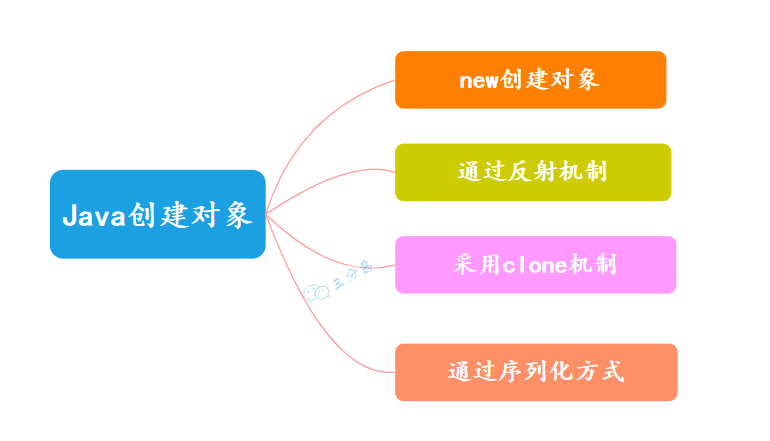
Java 有四种创建对象的方式：
①、new 关键字创建，这是最常见和直接的方式，通过调用类的构造方法来创建对象。
Person person = new Person();
②、反射机制创建，反射机制允许在运行时创建对象，并且可以访问类的私有成员，在框架和工具类中比较常见。
Class clazz = Class.forName("Person");
Person person = (Person) clazz.newInstance();
③、clone 拷贝创建，通过 clone 方法创建对象，需要实现 Cloneable 接口并重写 clone 方法。
Person person = new Person();
Person person2 = (Person) person.clone();
④、序列化机制创建，通过序列化将对象转换为字节流，再通过反序列化从字节流中恢复对象。需要实现 Serializable 接口。
Person person = new Person();
ObjectOutputStream oos = new ObjectOutputStream(new FileOutputStream("person.txt"));
oos.writeObject(person);
ObjectInputStream ois = new ObjectInputStream(new FileInputStream("person.txt"));
Person person2 = (Person) ois.readObject();
new 子类的时候，子类和父类静态代码块，构造方法的执行顺序
在 Java 中，当创建一个子类对象时，子类和父类的静态代码块、构造方法的执行顺序遵循一定的规则。这些规则主要包括以下几个步骤：
- 首先执行父类的静态代码块（仅在类第一次加载时执行）。
- 接着执行子类的静态代码块（仅在类第一次加载时执行）。
- 再执行父类的构造方法。
- 最后执行子类的构造方法。
下面是一个详细的代码示例：
class Parent {
// 父类静态代码块
static {
System.out.println("父类静态代码块");
}
// 父类构造方法
public Parent() {
System.out.println("父类构造方法");
}
}
class Child extends Parent {
// 子类静态代码块
static {
System.out.println("子类静态代码块");
}
// 子类构造方法
public Child() {
System.out.println("子类构造方法");
}
}
public class Main {
public static void main(String[] args) {
new Child();
}
}
执行上述代码时，输出结果如下：
父类静态代码块
子类静态代码块
父类构造方法
子类构造方法
- 静态代码块：在类加载时执行，仅执行一次，按父类-子类的顺序执行。
- 构造方法：在每次创建对象时执行，按父类-子类的顺序执行，先初始化块后构造方法。
- Java 面试指南（付费）收录的京东面经同学 2 后端面试原题：new 子类的时候，子类和父类静态代码块，构造方法的执行顺序
String
33.String 是 Java 基本数据类型吗？可以被继承吗？
不是，String 是一个类，属于引用数据类型。Java 的基本数据类型包括八种：四种整型（byte、short、int、long）、两种浮点型（float、double）、一种字符型（char）和一种布尔型（boolean）。
String 类可以继承吗？
不行。String 类使用 final 修饰，是所谓的不可变类，无法被继承。
String 有哪些常用方法？
我自己常用的有：
length()- 返回字符串的长度。charAt(int index)- 返回指定位置的字符。substring(int beginIndex, int endIndex)- 返回字符串的一个子串，从beginIndex到endIndex-1。contains(CharSequence s)- 检查字符串是否包含指定的字符序列。equals(Object anotherObject)- 比较两个字符串的内容是否相等。indexOf(int ch)和indexOf(String str)- 返回指定字符或字符串首次出现的位置。replace(char oldChar, char newChar)和replace(CharSequence target, CharSequence replacement)- 替换字符串中的字符或字符序列。trim()- 去除字符串两端的空白字符。split(String regex)- 根据给定正则表达式的匹配拆分此字符串。
34.String 和 StringBuilder、StringBuffer 的区别？
推荐阅读：StringBuffer 和 StringBuilder 两兄弟
String、StringBuilder和StringBuffer在 Java 中都是用于处理字符串的，它们之间的区别是，String 是不可变的，平常开发用得最多，当遇到大量字符串连接时，就用 StringBuilder，它不会生成很多新的对象，StringBuffer 和 StringBuilder 类似，但每个方法上都加了 synchronized 关键字，所以是线程安全的。
请说说 String 的特点
String类的对象是不可变的。也就是说，一旦一个String对象被创建，它所包含的字符串内容是不可改变的。- 每次对
String对象进行修改操作（如拼接、替换等）实际上都会生成一个新的String对象，而不是修改原有对象。这可能会导致内存和性能开销，尤其是在大量字符串操作的情况下。
请说说 StringBuilder 的特点
StringBuilder提供了一系列的方法来进行字符串的增删改查操作，这些操作都是直接在原有字符串对象的底层数组上进行的，而不是生成新的 String 对象。StringBuilder不是线程安全的。这意味着在没有外部同步的情况下，它不适用于多线程环境。- 相比于
String，在进行频繁的字符串修改操作时，StringBuilder能提供更好的性能。 Java 中的字符串连+操作其实就是通过StringBuilder实现的。
请说说 StringBuffer 的特点
StringBuffer和StringBuilder类似，但StringBuffer是线程安全的，方法前面都加了synchronized关键字。
请总结一下使用场景
- String：适用于字符串内容不会改变的场景，比如说作为 HashMap 的 key。
- StringBuilder：适用于单线程环境下需要频繁修改字符串内容的场景，比如在循环中拼接或修改字符串，是 String 的完美替代品。
- StringBuffer：现在已经不怎么用了，因为一般不会在多线程场景下去频繁的修改字符串内容。
35.String str1 = new String("abc") 和 String str2 = "abc" 的区别？
直接使用双引号为字符串变量赋值时，Java 首先会检查字符串常量池中是否已经存在相同内容的字符串。
如果存在，Java 就会让新的变量引用池中的那个字符串；如果不存在，它会创建一个新的字符串，放入池中，并让变量引用它。
使用 new String("abc") 的方式创建字符串时，实际分为两步：
- 第一步，先检查字符串字面量 "abc" 是否在字符串常量池中，如果没有则创建一个；如果已经存在，则引用它。
- 第二步，在堆中再创建一个新的字符串对象，并将其初始化为字符串常量池中 "abc" 的一个副本。

也就是说：
String s1 = "沉默王二";
String s2 = "沉默王二";
String s3 = new String("沉默王二");
System.out.println(s1 == s2); // 输出 true，因为 s1 和 s2 引用的是字符串常量池中同一个对象。
System.out.println(s1 == s3); // 输出 false，因为 s3 是通过 new 关键字显式创建的，指向堆上不同的对象。
String s = new String("abc")创建了几个对象？
字符串常量池中如果之前已经有一个，则不再创建新的，直接引用；如果没有，则创建一个。
堆中肯定有一个，因为只要使用了 new 关键字，肯定会在堆中创建一个。
- Java 面试指南（付费）收录的小公司面经合集同学 1 Java 后端面试原题：String 变量直接赋值和构造方法赋值==比较相等吗？
36.String 是不可变类吗？字符串拼接是如何实现的？
String 是不可变的，这意味着一旦一个 String 对象被创建，其存储的文本内容就不能被改变。这是因为：
①、不可变性使得 String 对象在使用中更加安全。因为字符串经常用作参数传递给其他 Java 方法，例如网络连接、打开文件等。
如果 String 是可变的，这些方法调用的参数值就可能在不知不觉中被改变，从而导致网络连接被篡改、文件被莫名其妙地修改等问题。
②、不可变的对象因为状态不会改变，所以更容易进行缓存和重用。字符串常量池的出现正是基于这个原因。
当代码中出现相同的字符串字面量时，JVM 会确保所有的引用都指向常量池中的同一个对象，从而节约内存。
③、因为 String 的内容不会改变，所以它的哈希值也就固定不变。这使得 String 对象特别适合作为 HashMap 或 HashSet 等集合的键，因为计算哈希值只需要进行一次，提高了哈希表操作的效率。
字符串拼接是如何实现的？
因为 String 是不可变的，因此通过“+”操作符进行的字符串拼接，会生成新的字符串对象。
例如：
String a = "hello ";
String b = "world!";
String ab = a + b;
a 和 b 是通过双引号定义的，所以会在字符串常量池中，而 ab 是通过“+”操作符拼接的，所以会在堆中生成一个新的对象。
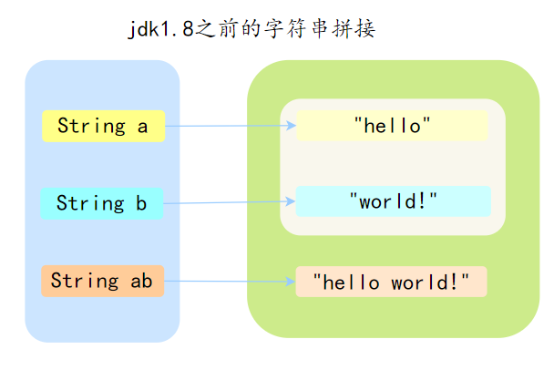
Java 8 时，JDK 对“+”号的字符串拼接进行了优化，Java 会在编译期基于 StringBuilder 的 append 方法进行拼接。
下面是通过 javap -verbose 命令反编译后的字节码，能清楚的看到 StringBuilder 的创建和 append 方法的调用。
stack=2, locals=4, args_size=1
0: ldc #2 // String hello
2: astore_1
3: ldc #3 // String world!
5: astore_2
6: new #4 // class java/lang/StringBuilder
9: dup
10: invokespecial #5 // Method java/lang/StringBuilder."<init>":()V
13: aload_1
14: invokevirtual #6 // Method java/lang/StringBuilder.append:(Ljava/lang/String;)Ljava/lang/StringBuilder;
17: aload_2
18: invokevirtual #6 // Method java/lang/StringBuilder.append:(Ljava/lang/String;)Ljava/lang/StringBuilder;
21: invokevirtual #7 // Method java/lang/StringBuilder.toString:()Ljava/lang/String;
24: astore_3
25: return
也就是说，上面的代码相当于：
String a = "hello ";
String b = "world!";
StringBuilder sb = new StringBuilder();
sb.append(a);
sb.append(b);
String ab = sb.toString();
因此，如果笼统地讲，通过加号拼接字符串时会创建多个 String 对象是不准确的。因为加号拼接在编译期还会创建一个 StringBuilder 对象，最终调用 toString() 方法的时候再返回一个新的 String 对象。
@Override
public String toString() {
// Create a copy, don't share the array
return new String(value, 0, count);
}
那除了使用 + 号来拼接字符串，还有 StringBuilder.append()、String.join() 等方式。
推荐阅读：如何拼接字符串？
如何保证 String 不可变？
第一，String 类内部使用一个私有的字符数组来存储字符串数据。这个字符数组在创建字符串时被初始化，之后不允许被改变。
private final char value[];
第二，String 类没有提供任何可以修改其内容的公共方法，像 concat 这些看似修改字符串的操作，实际上都是返回一个新创建的字符串对象，而原始字符串对象保持不变。
public String concat(String str) {
if (str.isEmpty()) {
return this;
}
int len = value.length;
int otherLen = str.length();
char buf[] = Arrays.copyOf(value, len + otherLen);
str.getChars(buf, len);
return new String(buf, true);
}
第三，String 类本身被声明为 final，这意味着它不能被继承。这防止了子类可能通过添加修改方法来改变字符串内容的可能性。
public final class String
- Java 面试指南（付费）收录的小米春招同学 K 一面面试原题：String 是可变的吗，为什么要设计为不可变
- Java 面试指南（付费）收录的美团同学 2 优选物流调度技术 2 面面试原题：String 不可变吗？为什么不可变？有什么好处？怎么保证不可变。
- Java 面试指南（付费）收录的京东面经同学 8 面试原题：字符串拼接
37.intern 方法有什么作用？
JDK 源码里已经对这个方法进行了说明：
* <p>
* When the intern method is invoked, if the pool already contains a
* string equal to this {@code String} object as determined by
* the {@link #equals(Object)} method, then the string from the pool is
* returned. Otherwise, this {@code String} object is added to the
* pool and a reference to this {@code String} object is returned.
* <p>
意思也很好懂：
- 如果当前字符串内容存在于字符串常量池（即 equals()方法为 true，也就是内容一样），直接返回字符串常量池中的字符串
- 否则，将此 String 对象添加到池中，并返回 String 对象的引用
Integer
38.Integer a= 127，Integer b = 127；Integer c= 128，Integer d = 128；相等吗?
- 推荐阅读：IntegerCache
- 推荐阅读：深入浅出 Java 拆箱与装箱
a 和 b 相等，c 和 d 不相等。
这个问题涉及到 Java 的自动装箱机制以及Integer类的缓存机制。
对于第一对：
Integer a = 127;
Integer b = 127;
a和b是相等的。这是因为 Java 在自动装箱过程中，会使用Integer.valueOf()方法来创建Integer对象。
Integer.valueOf()方法会针对数值在-128 到 127 之间的Integer对象使用缓存。因此，a和b实际上引用了常量池中相同的Integer对象。
对于第二对：
Integer c = 128;
Integer d = 128;
c和d不相等。这是因为 128 超出了Integer缓存的范围(-128 到 127)。
因此，自动装箱过程会为c和d创建两个不同的Integer对象，它们有不同的引用地址。
可以通过==运算符来检查它们是否相等：
System.out.println(a == b); // 输出true
System.out.println(c == d); // 输出false
要比较Integer对象的数值是否相等，应该使用equals方法，而不是==运算符：
System.out.println(a.equals(b)); // 输出true
System.out.println(c.equals(d)); // 输出true
使用equals方法时，c和d的比较结果为true，因为equals比较的是对象的数值，而不是引用地址。
什么是 Integer 缓存？
就拿 Integer 的缓存吃来说吧。根据实践发现，大部分的数据操作都集中在值比较小的范围，因此 Integer 搞了个缓存池，默认范围是 -128 到 127。
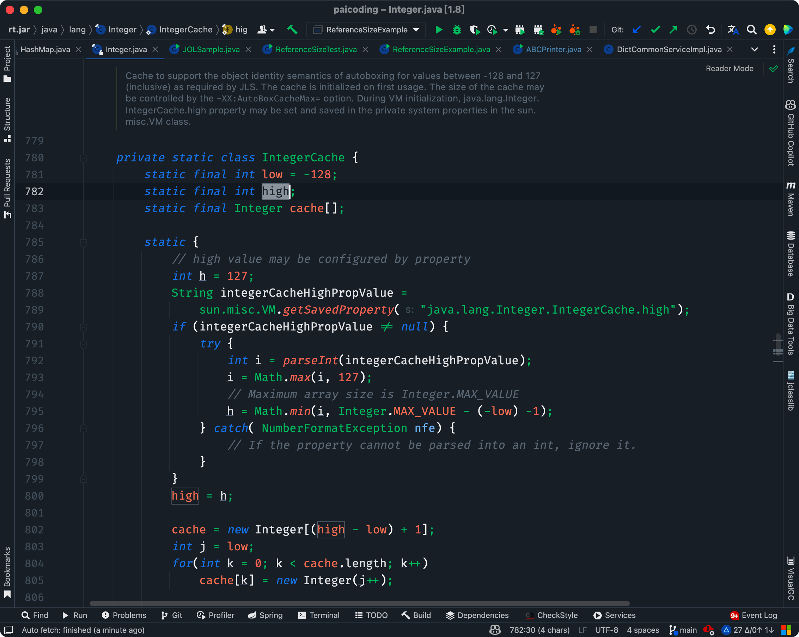
当我们使用自动装箱来创建这个范围内的 Integer 对象时，Java 会直接从缓存中返回一个已存在的对象，而不是每次都创建一个新的对象。这意味着，对于这个值范围内的所有 Integer 对象，它们实际上是引用相同的对象实例。
Integer 缓存的主要目的是优化性能和内存使用。对于小整数的频繁操作，使用缓存可以显著减少对象创建的数量。
可以在运行的时候添加 -Djava.lang.Integer.IntegerCache.high=1000 来调整缓存池的最大值。
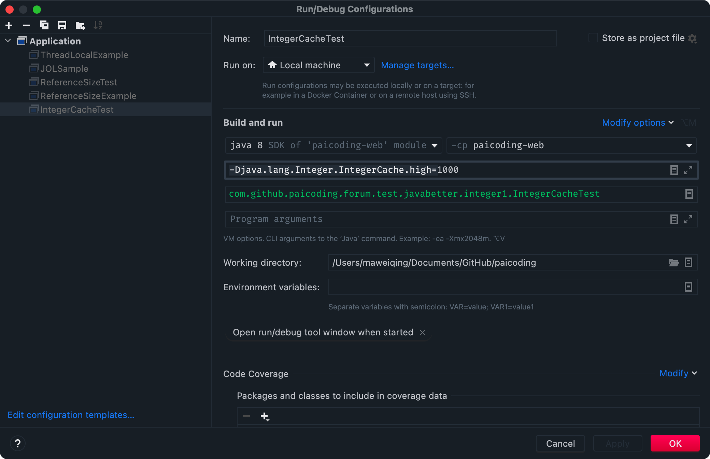
引用是 Integer 类型，= 右侧是 int 基本类型时，会进行自动装箱，调用的其实是 Integer.valueOf()方法，它会调用 IntegerCache。
public static Integer valueOf(int i) {
if (i >= IntegerCache.low && i <= IntegerCache.high)
return IntegerCache.cache[i + (-IntegerCache.low)];
return new Integer(i);
}
IntegerCache 是一个静态内部类，在静态代码块中会初始化好缓存的值。
private static class IntegerCache {
……
static {
//创建Integer对象存储
for(int k = 0; k < cache.length; k++)
cache[k] = new Integer(j++);
……
}
}
new Integer(10) == new Integer(10) 相等吗
在 Java 中，使用new Integer(10) == new Integer(10)进行比较时，结果是 false。
这是因为 new 关键字会在堆（Heap）上为每个 Integer 对象分配新的内存空间，所以这里创建了两个不同的 Integer 对象，它们有不同的内存地址。
当使用==运算符比较这两个对象时，实际上比较的是它们的内存地址，而不是它们的值，因此即使两个对象代表相同的数值（10），结果也是 false。
- Java 面试指南（付费）收录的小米春招同学 K 一面面试原题：new Integer(10) == new Integer(10) 相等吗 常量池
39.String 怎么转成 Integer 的？原理？
PS:这道题印象中在一些面经中出场过几次。
String 转成 Integer，主要有两个方法：
- Integer.parseInt(String s)
- Integer.valueOf(String s)
不管哪一种，最终还是会调用 Integer 类内中的parseInt(String s, int radix)方法。
抛去一些边界之类的看看核心代码：
public static int parseInt(String s, int radix)
throws NumberFormatException
{
int result = 0;
//是否是负数
boolean negative = false;
//char字符数组下标和长度
int i = 0, len = s.length();
……
int digit;
//判断字符长度是否大于0，否则抛出异常
if (len > 0) {
……
while (i < len) {
// Accumulating negatively avoids surprises near MAX_VALUE
//返回指定基数中字符表示的数值。（此处是十进制数值）
digit = Character.digit(s.charAt(i++),radix);
//进制位乘以数值
result *= radix;
result -= digit;
}
}
//根据上面得到的是否负数，返回相应的值
return negative ? result : -result;
}
去掉枝枝蔓蔓（当然这些枝枝蔓蔓可以去看看，源码 cover 了很多情况），其实剩下的就是一个简单的字符串遍历计算，不过计算方式有点反常规，是用负的值累减。
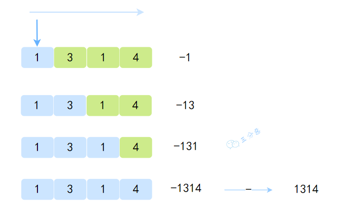
Object
40.Object 类的常见方法？
在 Java 中，经常提到一个词“万物皆对象”，其中的“万物”指的是 Java 中的所有类，而这些类都是 Object 类的子类。
Object 主要提供了 11 个方法，大致可以分为六类：

对象比较：
①、public native int hashCode() ：native 方法，用于返回对象的哈希码。
public native int hashCode();
按照约定，相等的对象必须具有相等的哈希码。如果重写了 equals 方法，就应该重写 hashCode 方法。可以使用 Objects.hash() 方法来生成哈希码。
public int hashCode() {
return Objects.hash(name, age);
}
②、public boolean equals(Object obj)：用于比较 2 个对象的内存地址是否相等。
public boolean equals(Object obj) {
return (this == obj);
}
如果比较的是两个对象的值是否相等，就要重写该方法，比如 String 类、Integer 类等都重写了该方法。举个例子，假如有一个 Person 类，我们认为只要年龄和名字相同，就是同一个人，那么就可以这样重写 equals 方法：
class Person1 {
private String name;
private int age;
// 省略 gettter 和 setter 方法
public boolean equals(Object obj) {
if (this == obj) {
return true;
}
if (obj instanceof Person1) {
Person1 p = (Person1) obj;
return this.name.equals(p.getName()) && this.age == p.getAge();
}
return false;
}
}
对象拷贝：
protected native Object clone() throws CloneNotSupportedException：naitive 方法，返回此对象的一个副本。默认实现只做浅拷贝，且类必须实现 Cloneable 接口。
Object 本身没有实现 Cloneable 接口，所以在不重写 clone 方法的情况下直接直接调用该方法会发生 CloneNotSupportedException 异常。
对象转字符串：
public String toString()：返回对象的字符串表示。默认实现返回类名@哈希码的十六进制表示，但通常会被重写以返回更有意义的信息。比如，我们常常会返回json对象，以便于日志的记录。
public String toString() {
return getClass().getName() + "@" + Integer.toHexString(hashCode());
}
比如说一个 Person 类，我们可以重写 toString 方法，返回一个有意义的字符串：
public String toString() {
return "Person{" +
"name='" + name + '\'' +
", age=" + age +
'}';
}
当然了，这项工作也可以直接交给 IDE，比如 IntelliJ IDEA，直接右键选择 Generate，然后选择 toString 方法，就会自动生成一个 toString 方法。
也可以交给 Lombok，使用 @Data 注解，它会自动生成 toString 方法。
数组也是一个对象，所以通常我们打印数组的时候，会看到诸如 [I@1b6d3586 这样的字符串，这个就是 int 数组的哈希码。
多线程调度：
每个对象都可以调用 Object 的 wait/notify 方法来实现等待/通知机制。我们来写一个例子：
public class WaitNotifyDemo {
public static void main(String[] args) {
Object lock = new Object();
new Thread(() -> {
synchronized (lock) {
System.out.println("线程1：我要等待");
try {
lock.wait();
} catch (InterruptedException e) {
e.printStackTrace();
}
System.out.println("线程1：我被唤醒了");
}
}).start();
new Thread(() -> {
synchronized (lock) {
System.out.println("线程2：我要唤醒");
lock.notify();
System.out.println("线程2：我已经唤醒了");
}
}).start();
}
}
解释一下：
- 线程 1 先执行，它调用了
lock.wait()方法，然后进入了等待状态。 - 线程 2 后执行，它调用了
lock.notify()方法，然后线程 1 被唤醒了。
①、public final void wait() throws InterruptedException：调用该方法会导致当前线程等待，直到另一个线程调用此对象的notify()方法或notifyAll()方法。
②、public final native void notify()：唤醒在此对象监视器上等待的单个线程。如果有多个线程等待，选择一个线程被唤醒。
③、public final native void notifyAll()：唤醒在此对象监视器上等待的所有线程。
④、public final native void wait(long timeout) throws InterruptedException：等待 timeout 毫秒，如果在 timeout 毫秒内没有被唤醒，会自动唤醒。
⑥、public final void wait(long timeout, int nanos) throws InterruptedException：更加精确了，等待 timeout 毫秒和 nanos 纳秒，如果在 timeout 毫秒和 nanos 纳秒内没有被唤醒，会自动唤醒。
反射：
public final native Class<?> getClass()：用于获取对象的类信息，如类名。比如说：
public class GetClassDemo {
public static void main(String[] args) {
Person p = new Person();
Class<? extends Person> aClass = p.getClass();
System.out.println(aClass.getName());
}
}
输出结果：
com.itwanger.Person
垃圾回收：
protected void finalize() throws Throwable：当垃圾回收器决定回收对象占用的内存时调用此方法。用于清理资源，但 Java 不推荐使用，因为它不可预测且容易导致问题，Java 9 开始已被弃用。
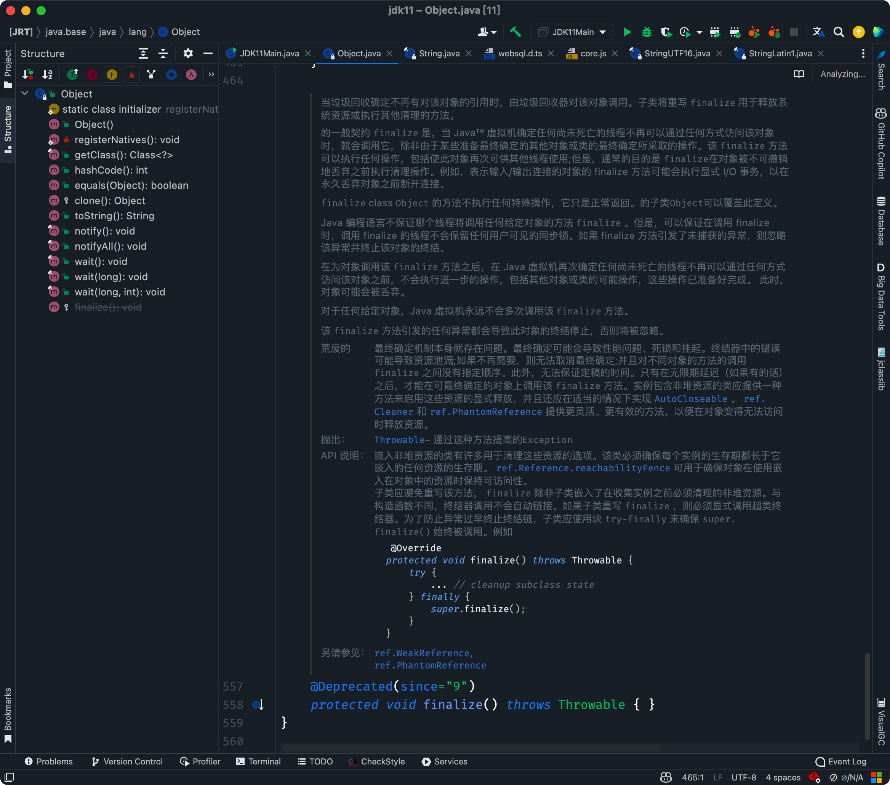
异常处理
41.Java 中异常处理体系?
推荐阅读：一文彻底搞懂 Java 异常处理
Java 中的异常处理机制用于处理程序运行过程中可能发生的各种异常情况，通常通过 try-catch-finally 语句和 throw 关键字来实现。

Throwable 是 Java 语言中所有错误和异常的基类。它有两个主要的子类：Error 和 Exception，这两个类分别代表了 Java 异常处理体系中的两个分支。
Error 类代表那些严重的错误，这类错误通常是程序无法处理的。比如，OutOfMemoryError 表示内存不足，StackOverflowError 表示栈溢出。这些错误通常与 JVM 的运行状态有关，一旦发生，应用程序通常无法恢复。
Exception 类代表程序可以处理的异常。它分为两大类：编译时异常（Checked Exception）和运行时异常（Runtime Exception）。
①、编译时异常（Checked Exception）：这类异常在编译时必须被显式处理（捕获或声明抛出）。
如果方法可能抛出某种编译时异常，但没有捕获它（try-catch）或没有在方法声明中用 throws 子句声明它，那么编译将不会通过。例如：IOException、SQLException 等。
②、运行时异常（Runtime Exception）：这类异常在运行时抛出，它们都是 RuntimeException 的子类。对于运行时异常，Java 编译器不要求必须处理它们（即不需要捕获也不需要声明抛出）。
运行时异常通常是由程序逻辑错误导致的，如 NullPointerException、IndexOutOfBoundsException 等。
42.异常的处理方式？

①、遇到异常时可以不处理，直接通过throw 和 throws 抛出异常，交给上层调用者处理。
throws 关键字用于声明可能会抛出的异常，而 throw 关键字用于抛出异常。
public void test() throws Exception {
throw new Exception("抛出异常");
}
②、使用 try-catch 捕获异常，处理异常。
try {
//包含可能会出现异常的代码以及声明异常的方法
}catch(Exception e) {
//捕获异常并进行处理
}finally {
//可选，必执行的代码
}
catch和finally的异常可以同时抛出吗？
如果 catch 块抛出一个异常，而 finally 块中也抛出异常，那么最终抛出的将是 finally 块中的异常。catch 块中的异常会被丢弃，而 finally 块中的异常会覆盖并向上传递。
public class Example {
public static void main(String[] args) {
try {
throw new Exception("Exception in try");
} catch (Exception e) {
throw new RuntimeException("Exception in catch");
} finally {
throw new IllegalArgumentException("Exception in finally");
}
}
}
- try 块首先抛出一个 Exception。
- 控制流进入 catch 块，catch 块中又抛出了一个 RuntimeException。
- 但是在 finally 块中，抛出了一个 IllegalArgumentException，最终程序抛出的异常是 finally 块中的 IllegalArgumentException。
虽然 catch 和 finally 中的异常不能同时抛出，但可以手动捕获 finally 块中的异常，并将 catch 块中的异常保留下来，避免被覆盖。常见的做法是使用一个变量临时存储 catch 中的异常，然后在 finally 中处理该异常：
public class Example {
public static void main(String[] args) {
Exception catchException = null;
try {
throw new Exception("Exception in try");
} catch (Exception e) {
catchException = e;
throw new RuntimeException("Exception in catch");
} finally {
try {
throw new IllegalArgumentException("Exception in finally");
} catch (IllegalArgumentException e) {
if (catchException != null) {
System.out.println("Catch exception: " + catchException.getMessage());
}
System.out.println("Finally exception: " + e.getMessage());
}
}
}
}
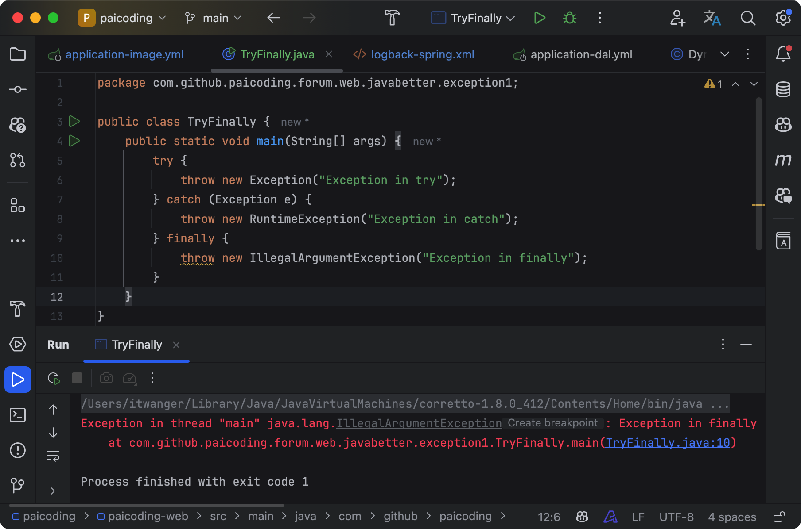
43.三道经典异常处理代码题
题目 1
public class TryDemo {
public static void main(String[] args) {
System.out.println(test());
}
public static int test() {
try {
return 1;
} catch (Exception e) {
return 2;
} finally {
System.out.print("3");
}
}
}
在test()方法中，首先有一个try块，接着是一个catch块（用于捕获异常），最后是一个finally块（无论是否捕获到异常，finally块总会执行）。
①、try块中包含一条return 1;语句。正常情况下，如果try块中的代码能够顺利执行，那么方法将返回数字1。在这个例子中，try块中没有任何可能抛出异常的操作，因此它会正常执行完毕，并准备返回1。
②、由于try块中没有异常发生，所以catch块中的代码不会执行。
③、无论前面的代码是否发生异常，finally块总是会执行。在这个例子中，finally块包含一条System.out.print("3");语句，意味着在方法结束前，会在控制台打印出3。
当执行main方法时，控制台的输出将会是：
31
这是因为finally块确保了它包含的System.out.print("3");会执行并打印3，随后test()方法返回try块中的值1，最终结果就是31。
题目 2
public class TryDemo {
public static void main(String[] args) {
System.out.println(test1());
}
public static int test1() {
try {
return 2;
} finally {
return 3;
}
}
}
执行结果：3。
try 返回前先执行 finally，结果 finally 里不按套路出牌，直接 return 了，自然也就走不到 try 里面的 return 了。
注意：finally 里面使用 return 仅存在于面试题中，实际开发这么写要挨吊的（😂）。
题目 3
public class TryDemo {
public static void main(String[] args) {
System.out.println(test1());
}
public static int test1() {
int i = 0;
try {
i = 2;
return i;
} finally {
i = 3;
}
}
}
执行结果：2。
大家可能会以为结果应该是 3，因为在 return 前会执行 finally，而 i 在 finally 中被修改为 3 了，那最终返回 i 不是应该为 3 吗？
但其实，在执行 finally 之前，JVM 会先将 i 的结果暂存起来，然后 finally 执行完毕后，会返回之前暂存的结果，而不是返回 i，所以即使 i 已经被修改为 3，最终返回的还是之前暂存起来的结果 2。
- Java 面试指南（付费）收录的京东同学 10 后端实习一面的原题：return 先执行还是 finally 先执行
I/O
- Java中的IO模型；【类比MySQL中的读写模型】
44.Java 中 IO 流分为几种?
Java IO 流的划分可以根据多个维度进行，包括数据流的方向（输入或输出）、处理的数据单位（字节或字符）、流的功能以及流是否支持随机访问等。
按照数据流方向如何划分？
- 输入流（Input Stream）：从源（如文件、网络等）读取数据到程序。
- 输出流（Output Stream）：将数据从程序写出到目的地（如文件、网络、控制台等）。
按处理数据单位如何划分？
- 字节流（Byte Streams）：以字节为单位读写数据，主要用于处理二进制数据，如音频、图像文件等。
- 字符流（Character Streams）：以字符为单位读写数据，主要用于处理文本数据。

按功能如何划分？
- 节点流（Node Streams）：直接与数据源或目的地相连，如 FileInputStream、FileOutputStream。
- 处理流（Processing Streams）：对一个已存在的流进行包装，如缓冲流 BufferedInputStream、BufferedOutputStream。
- 管道流（Piped Streams）：用于线程之间的数据传输，如 PipedInputStream、PipedOutputStream。
IO 流用到了什么设计模式？
其实，Java 的 IO 流体系还用到了一个设计模式——装饰器模式。
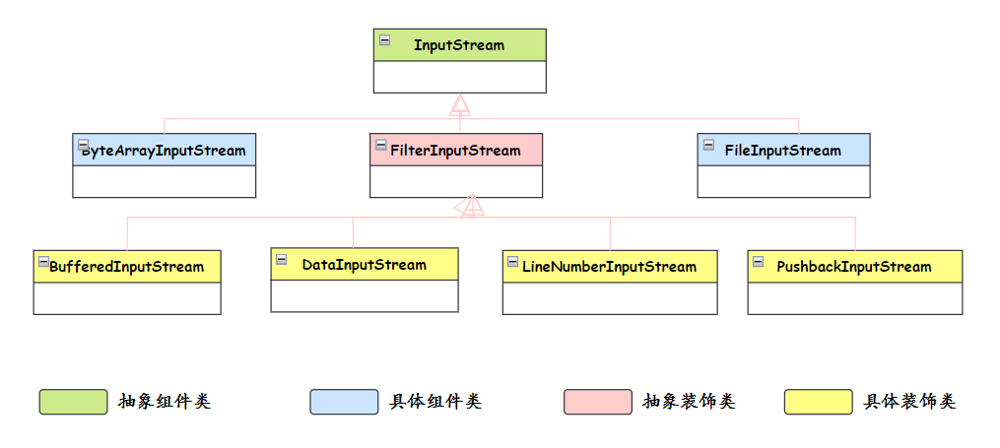
Java 缓冲区溢出，如何预防
Java 缓冲区溢出主要是由于向缓冲区写入的数据超过其能够存储的数据量。可以采用这些措施来避免：
①、合理设置缓冲区大小：在创建缓冲区时，应根据实际需求合理设置缓冲区的大小，避免创建过大或过小的缓冲区。
②、控制写入数据量：在向缓冲区写入数据时，应该控制写入的数据量，确保不会超过缓冲区的容量。Java 的 ByteBuffer 类提供了remaining()方法，可以获取缓冲区中剩余的可写入数据量。
import java.nio.ByteBuffer;
public class ByteBufferExample {
public static void main(String[] args) {
// 模拟接收到的数据
byte[] receivedData = {1, 2, 3, 4, 5};
int bufferSize = 1024; // 设置一个合理的缓冲区大小
// 创建ByteBuffer
ByteBuffer buffer = ByteBuffer.allocate(bufferSize);
// 写入数据之前检查容量是否足够
if (buffer.remaining() >= receivedData.length) {
buffer.put(receivedData);
} else {
System.out.println("Not enough space in buffer to write data.");
}
// 准备读取数据：将limit设置为当前位置，position设回0
buffer.flip();
// 读取数据
while (buffer.hasRemaining()) {
byte data = buffer.get();
System.out.println("Read data: " + data);
}
// 清空缓冲区以便再次使用
buffer.clear();
}
}
- Java 面试指南（付费）收录的美团面经同学 2 Java 后端技术一面面试原题：Java IO 流 如何划分？
- Java 面试指南（付费）收录的华为面经同学 9 Java 通用软件开发一面面试原题：Java 缓冲区溢出，如何预防
45.既然有了字节流,为什么还要有字符流?
其实字符流是由 Java 虚拟机将字节转换得到的，问题就出在这个过程还比较耗时，并且，如果我们不知道编码类型就很容易出现乱码问题。
所以， I/O 流就干脆提供了一个直接操作字符的接口，方便我们平时对字符进行流操作。如果音频文件、图片等媒体文件用字节流比较好，如果涉及到字符的话使用字符流比较好。
文本存储是字节流还是字符流，视频文件呢？
在计算机中，文本和视频都是按照字节存储的，只是如果是文本文件的话，我们可以通过字符流的形式去读取，这样更方面的我们进行直接处理。
比如说我们需要在一个大文本文件中查找某个字符串，可以直接通过字符流来读取判断。
处理视频文件时，通常使用字节流（如 Java 中的FileInputStream、FileOutputStream）来读取或写入数据，并且会尽量使用缓冲流（如BufferedInputStream、BufferedOutputStream）来提高读写效率。
在技术派实战项目项目中，对于文本，比如说文章和教程内容，是直接存储在数据库中的，而对于视频和图片等大文件，是存储在 OSS 中的。
因此，无论是文本文件还是视频文件，它们在物理存储层面都是以字节流的形式存在。区别在于，我们如何通过 Java 代码来解释和处理这些字节流：作为编码后的字符还是作为二进制数据。
- Java 面试指南（付费）收录的国企面试原题：文本存储是字节流还是字符流，视频文件呢？
46.BIO、NIO、AIO 之间的区别？
Java 常见的 IO 模型有三种：BIO、NIO 和 AIO。
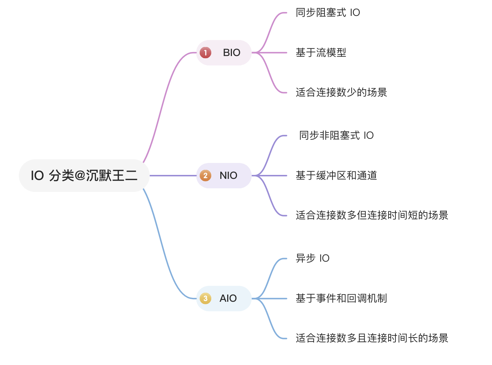
BIO：采用阻塞式 I/O 模型，线程在执行 I/O 操作时被阻塞，无法处理其他任务，适用于连接数较少的场景。
NIO：采用非阻塞 I/O 模型，线程在等待 I/O 时可执行其他任务，通过 Selector 监控多个 Channel 上的事件，适用于连接数多但连接时间短的场景。
AIO：使用异步 I/O 模型，线程发起 I/O 请求后立即返回，当 I/O 操作完成时通过回调函数通知线程，适用于连接数多且连接时间长的场景。
简单说一下 BIO？
BIO，也就是传统的 IO，基于字节流或字符流（如 FileInputStream、BufferedReader 等）进行文件读写，基于 Socket 和 ServerSocket 进行网络通信。
对于每个连接，都需要创建一个独立的线程来处理读写操作。

简单说下 NIO？
NIO，JDK 1.4 时引入，放在 java.nio 包下，提供了 Channel、Buffer、Selector 等新的抽象，基于 RandomAccessFile、FileChannel、ByteBuffer 进行文件读写，基于 SocketChannel 和 ServerSocketChannel 进行网络通信。
实际上，“旧”的 I/O 包已经使用 NIO 重新实现过，所以在进行文件读写时，NIO 并无法体现出比 BIO 更可靠的性能。
NIO 的魅力主要体现在网络编程中，服务器可以用一个线程处理多个客户端连接，通过 Selector 监听多个 Channel 来实现多路复用，极大地提高了网络编程的性能。

缓冲区 Buffer 也能极大提升一次 IO 操作的效率。

简单说下 AIO？
AIO 是 Java 7 引入的，放在 java.nio.channels 包下，提供了 AsynchronousFileChannel、AsynchronousSocketChannel 等异步 Channel。
它引入了异步通道的概念，使得 I/O 操作可以异步进行。这意味着线程发起一个读写操作后不必等待其完成，可以立即进行其他任务，并且当读写操作真正完成时，线程会被异步地通知。
AsynchronousFileChannel fileChannel = AsynchronousFileChannel.open(Paths.get("test.txt"), StandardOpenOption.READ);
ByteBuffer buffer = ByteBuffer.allocate(1024);
Future<Integer> result = fileChannel.read(buffer, 0);
while (!result.isDone()) {
// do something
}
序列化
47.什么是序列化？什么是反序列化？
序列化（Serialization）是指将实体对象转换为字节流的过程，以便能够将该对象保存到文件、数据库，或者进行网络传输。
反序列化（Deserialization）就是将字节流转换回对象的过程，以便构建原始对象。
序列化的过程，相当于把人类能够理解的变成语言转换成机器能够理解的二进制语言的过程；反序列化的过程则是相反。
序列化机制中还隐藏了一个概念，那就是序列化的数据模板。例如，把一个对象序列化成字节流时，对象的类就是数据模板。这个数据模板的作用是，保证序列化与反序列化过程中的数据的一致性。
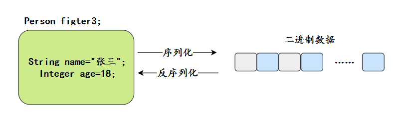
Serializable 接口有什么用？
Serializable接口用于标记一个类可以被序列化。
public class Person implements Serializable {
private String name;
private int age;
// 省略 getter 和 setter 方法
}
serialVersionUID 有什么用？
serialVersionUID 是 Java 序列化机制中用于标识类版本的唯一标识符。它的作用是确保在序列化和反序列化过程中，类的版本是兼容的。
import java.io.Serializable;
public class MyClass implements Serializable {
private static final long serialVersionUID = 1L;
private String name;
private int age;
// getters and setters
}
serialVersionUID 被设置为 1L 是一种比较省事的做法，也可以使用 Intellij IDEA 进行自动生成。
但只要 serialVersionUID 在序列化和反序列化过程中保持一致，就不会出现问题。
如果不显式声明 serialVersionUID，Java 运行时会根据类的详细信息自动生成一个 serialVersionUID。那么当类的结构发生变化时，自动生成的 serialVersionUID 就会发生变化，导致反序列化失败。
Java 序列化不包含静态变量吗？
是的，序列化机制只会保存对象的状态，而静态变量属于类的状态，不属于对象的状态。
如果有些变量不想序列化，怎么办？
可以使用transient关键字修饰不想序列化的变量。（但静态变量默认不会被序列化，因此 transient 对静态变量没有影响。）
public class Person implements Serializable {
private String name;
private transient int age;
// 省略 getter 和 setter 方法
}
能解释一下序列化的过程和作用吗？
序列化过程通常涉及到以下几个步骤：
第一步，实现 Serializable 接口。
public class Person implements Serializable {
private String name;
private int age;
// 省略构造方法、getters和setters
}
第二步，使用 ObjectOutputStream 来将对象写入到输出流中。
ObjectOutputStream out = new ObjectOutputStream(new FileOutputStream("person.ser"));
第三步，调用 ObjectOutputStream 的 writeObject 方法，将对象序列化并写入到输出流中。
Person person = new Person("沉默王二", 18);
out.writeObject(person);
::: detail
import java.io.*;
class Person implements Serializable {
private static final long serialVersionUID = 1L;
private String name;
private static int age = 25; // 静态变量
public Person(String name) {
this.name = name;
}
public static void setAge(int age) {
Person.age = age;
}
@Override
public String toString() {
return "Person{name='" + name + "', age=" + age + '}';
}
}
public class SerializationTest {
public static void main(String[] args) throws IOException, ClassNotFoundException {
Person p1 = new Person("Alice");
// 序列化
ObjectOutputStream oos = new ObjectOutputStream(new FileOutputStream("person.ser"));
oos.writeObject(p1);
oos.close();
// 修改静态变量
Person.setAge(30);
// 反序列化
ObjectInputStream ois = new ObjectInputStream(new FileInputStream("person.ser"));
Person p2 = (Person) ois.readObject();
ois.close();
System.out.println(p2);
}
}
输出结果：
Person{name='Alice', age=30}
:::
48.说说有几种序列化方式？
Java 序列化方式有很多，常见的有三种：
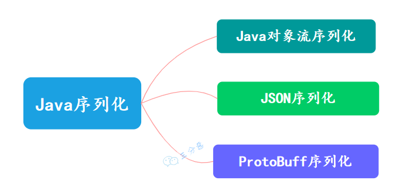
- Java 对象序列化 ：Java 原生序列化方法即通过 Java 原生流(InputStream 和 OutputStream 之间的转化)的方式进行转化，一般是对象输出流
ObjectOutputStream和对象输入流ObjectInputStream。 - Json 序列化：这个可能是我们最常用的序列化方式，Json 序列化的选择很多，一般会使用 jackson 包，通过 ObjectMapper 类来进行一些操作，比如将对象转化为 byte 数组或者将 json 串转化为对象。
- FastJson 序列化： 也可以。
- ProtoBuff 序列化：ProtocolBuffer 是一种轻便高效的结构化数据存储格式，ProtoBuff 序列化对象可以很大程度上将其压缩，可以大大减少数据传输大小，提高系统性能。
::: detail @code :::
网络编程
49.了解过Socket网络套接字吗？（补充）
2024 年 11 月 28 日 增补
Socket 是网络通信的基础，表示两台设备之间通信的一个端点。Socket 通常用于建立 TCP 或 UDP 连接，实现进程间的网络通信。
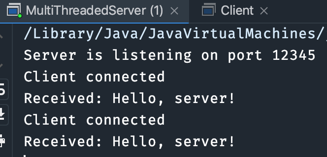
一个简单的 TCP 客户端：
class TcpClient {
public static void main(String[] args) throws IOException {
Socket socket = new Socket("127.0.0.1", 8080); // 连接服务器
BufferedReader in = new BufferedReader(new InputStreamReader(socket.getInputStream()));
PrintWriter out = new PrintWriter(socket.getOutputStream(), true);
out.println("Hello, Server!"); // 发送消息
System.out.println("Server response: " + in.readLine()); // 接收服务器响应
socket.close();
}
}
TCP 服务端：
class TcpServer {
public static void main(String[] args) throws IOException {
ServerSocket serverSocket = new ServerSocket(8080); // 创建服务器端Socket
System.out.println("Server started, waiting for connection...");
Socket socket = serverSocket.accept(); // 等待客户端连接
System.out.println("Client connected: " + socket.getInetAddress());
BufferedReader in = new BufferedReader(new InputStreamReader(socket.getInputStream()));
PrintWriter out = new PrintWriter(socket.getOutputStream(), true);
String message;
while ((message = in.readLine()) != null) {
System.out.println("Received: " + message);
out.println("Echo: " + message); // 回送消息
}
socket.close();
serverSocket.close();
}
}
RPC框架了解吗？
RPC是一种协议，允许程序调用位于远程服务器上的方法，就像调用本地方法一样。RPC 通常基于 Socket 通信实现。
RPC，Remote Procedure Call，远程过程调用
RPC 框架支持高效的序列化（如 Protocol Buffers）和通信协议（如 HTTP/2），屏蔽了底层网络通信的细节，开发者只需关注业务逻辑即可。
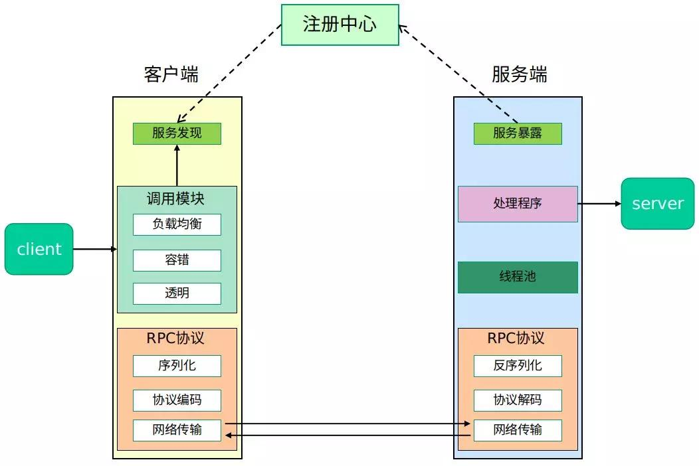
常见的 RPC 框架包括：
- gRPC：基于 HTTP/2 和 Protocol Buffers。
- Dubbo：阿里开源的分布式 RPC 框架，适合微服务场景。
- Spring Cloud OpenFeign：基于 REST 的轻量级 RPC 框架。
- Thrift：Apache 的跨语言 RPC 框架，支持多语言代码生成。
泛型
50.Java 泛型了解么？
推荐阅读：手写Java泛型，彻底掌握它
泛型主要用于提高代码的类型安全，它允许在定义类、接口和方法时使用类型参数，这样可以在编译时检查类型一致性，避免不必要的类型转换和类型错误。
没有泛型的时候，像 List 这样的集合类存储的是 Object 类型，导致从集合中读取数据时，必须进行强制类型转换，否则会引发 ClassCastException。
List list = new ArrayList();
list.add("hello");
String str = (String) list.get(0); // 必须强制类型转换
泛型一般有三种使用方式:泛型类、泛型接口、泛型方法。
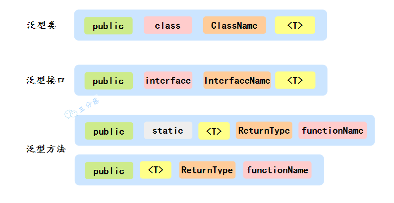
1.泛型类：
//此处T可以随便写为任意标识，常见的如T、E、K、V等形式的参数常用于表示泛型
//在实例化泛型类时，必须指定T的具体类型
public class Generic<T>{
private T key;
public Generic(T key) {
this.key = key;
}
public T getKey(){
return key;
}
}
如何实例化泛型类：
Generic<Integer> genericInteger = new Generic<Integer>(123456);
2.泛型接口 ：
public interface Generator<T> {
public T method();
}
实现泛型接口，指定类型：
class GeneratorImpl<T> implements Generator<String>{
@Override
public String method() {
return "hello";
}
}
3.泛型方法 ：
public static < E > void printArray( E[] inputArray )
{
for ( E element : inputArray ){
System.out.printf( "%s ", element );
}
System.out.println();
}
使用：
// 创建不同类型数组： Integer, Double 和 Character
Integer[] intArray = { 1, 2, 3 };
String[] stringArray = { "Hello", "World" };
printArray( intArray );
printArray( stringArray );
泛型常用的通配符有哪些？
常用的通配符为： T，E，K，V，？
- ？ 表示不确定的 java 类型
- T (type) 表示具体的一个 java 类型
- K V (key value) 分别代表 java 键值中的 Key Value
- E (element) 代表 Element
什么是泛型擦除？
所谓的泛型擦除，官方名叫“类型擦除”。
Java 的泛型是伪泛型，这是因为 Java 在编译期间，所有的类型信息都会被擦掉。
也就是说，在运行的时候，虚拟机会把泛型转化成具体的类型，之后的过程就是没有泛型的。
例如这段代码，往一群猫里放条狗：
LinkedList<Cat> cats = new LinkedList<Cat>();
LinkedList list = cats; // 注意我在这里把范型去掉了，但是list和cats是同一个链表！
list.add(new Dog()); // 完全没问题！
因为 Java 的范型只存在于源码里，编译的时候给你静态地检查一下范型类型是否正确，而到了运行时就不检查了。上面这段代码在 JRE（Java运行环境）看来和下面这段没区别：
LinkedList cats = new LinkedList(); // 注意：没有范型！
LinkedList list = cats;
list.add(new Dog());
为什么要类型擦除呢？
- 保持兼容性。为了向下兼容，因为 JDK5 之前是没有泛型的，为了让 JVM 保持向下兼容，就出了类型擦除这个策略。
- 运行期的优化。泛型在编译时基本上就可以确定要使用的类型是哪一个了，就没有必要在运行时，在进行查找了，直接在编译期就确定好数据的类型，省得运行期还要查找数据的类型。
注解
51.说一下你对注解的理解？
Java 注解本质上是一个标记，可以理解成生活中的一个人的一些小装扮，比如戴什么什么帽子，戴什么眼镜。
注解可以标记在类上、方法上、属性上等，标记自身也可以设置一些值，比如帽子颜色是绿色。
有了标记之后，我们就可以在编译或者运行阶段去识别这些标记，然后搞一些事情，这就是注解的用处。
例如我们常见的 AOP，使用注解作为切点就是运行期注解的应用；比如 lombok，就是注解在编译期的运行。
注解生命周期有三大类，分别是：
- RetentionPolicy.SOURCE：给编译器用的，不会写入 class 文件
- RetentionPolicy.CLASS：会写入 class 文件，在类加载阶段丢弃，也就是运行的时候就没这个信息了
- RetentionPolicy.RUNTIME：会写入 class 文件，永久保存，可以通过反射获取注解信息
所以我上文写的是解析的时候，没写具体是解析啥，因为不同的生命周期的解析动作是不同的。
像常见的：
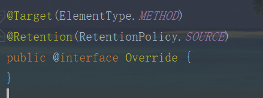
就是给编译器用的，编译器编译的时候检查没问题就 over 了，class 文件里面不会有 Override 这个标记。
再比如 Spring 常见的 Autowired ，就是 RUNTIME 的，所以在运行的时候可以通过反射得到注解的信息，还能拿到标记的值 required 。
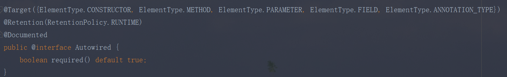
反射
52.什么是反射？应用？原理？
反射允许 Java 在运行时检查和操作类的方法和字段。通过反射，可以动态地获取类的字段、方法、构造方法等信息，并在运行时调用方法或访问字段。
比如创建一个对象是通过 new 关键字来实现的：
Person person = new Person();
Person 类的信息在编译时就确定了，那假如在编译期无法确定类的信息，但又想在运行时获取类的信息、创建类的实例、调用类的方法，这时候就要用到反射。
反射功能主要通过 java.lang.Class 类及 java.lang.reflect 包中的类如 Method, Field, Constructor 等来实现。
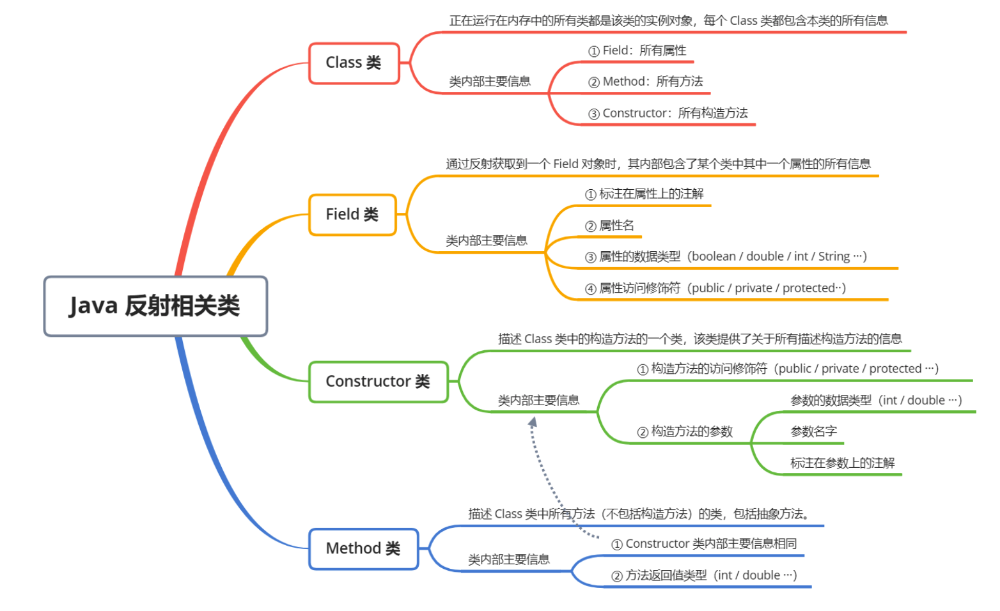
比如说我们可以装来动态加载类并创建对象：
String className = "java.util.Date";
Class<?> cls = Class.forName(className);
Object obj = cls.newInstance();
System.out.println(obj.getClass().getName());
比如说我们可以这样来访问字段和方法：
// 加载并实例化类
Class<?> cls = Class.forName("java.util.Date");
Object obj = cls.newInstance();
// 获取并调用方法
Method method = cls.getMethod("getTime");
Object result = method.invoke(obj);
System.out.println("Time: " + result);
// 访问字段
Field field = cls.getDeclaredField("fastTime");
field.setAccessible(true); // 对于私有字段需要这样做
System.out.println("fastTime: " + field.getLong(obj));
反射有哪些应用场景？
①、Spring 框架就大量使用了反射来动态加载和管理 Bean。
Class<?> clazz = Class.forName("com.example.MyClass");
Object instance = clazz.newInstance();
②、Java 的动态代理（Dynamic Proxy）机制就使用了反射来创建代理类。代理类可以在运行时动态处理方法调用，这在实现 AOP 和拦截器时非常有用。
InvocationHandler handler = new MyInvocationHandler();
MyInterface proxyInstance = (MyInterface) Proxy.newProxyInstance(
MyInterface.class.getClassLoader(),
new Class<?>[] { MyInterface.class },
handler
);
③、JUnit 和 TestNG 等测试框架使用反射机制来发现和执行测试方法。反射允许框架扫描类，查找带有特定注解（如 @Test）的方法，并在运行时调用它们。
Method testMethod = testClass.getMethod("testSomething");
testMethod.invoke(testInstance);
反射的原理是什么？
Java 程序的执行分为编译和运行两步，编译之后会生成字节码(.class)文件，JVM 进行类加载的时候，会加载字节码文件，将类型相关的所有信息加载进方法区，反射就是去获取这些信息，然后进行各种操作。
反射的应用场景
- 调用某一个不知道源码的jar包中的某一个类的方法；
- 阿里巴巴的Arthas工具
- Java 面试指南（付费）收录的美团面经同学 2 Java 后端技术一面面试原题：Java 反射用过吗？
- Java 面试指南（付费）收录的美团面经同学 18 成都到家面试原题：反射及其应用场景
- Java 面试指南（付费）收录的小米面经同学 F 面试原题：反射的介绍与使用场景
- Java 面试指南（付费）收录的美团面经同学 3 Java 后端技术一面面试原题：java 的反射机制，反射的应用场景 AOP 的实现原理是什么，与动态代理和反射有什么区别
- Java 面试指南（付费）收录的比亚迪面经同学 12 Java 技术面试原题：java的反射
JDK1.8 新特性
JDK 已经出到 17 了，但是你迭代你的版本，我用我的 8。JDK1.8 的一些新特性，当然现在也不新了，其实在工作中已经很常用了。
53.JDK 1.8 都有哪些新特性？
JDK 1.8 新增了不少新的特性，如 Lambda 表达式、接口默认方法、Stream API、日期时间 API、Optional 类等。
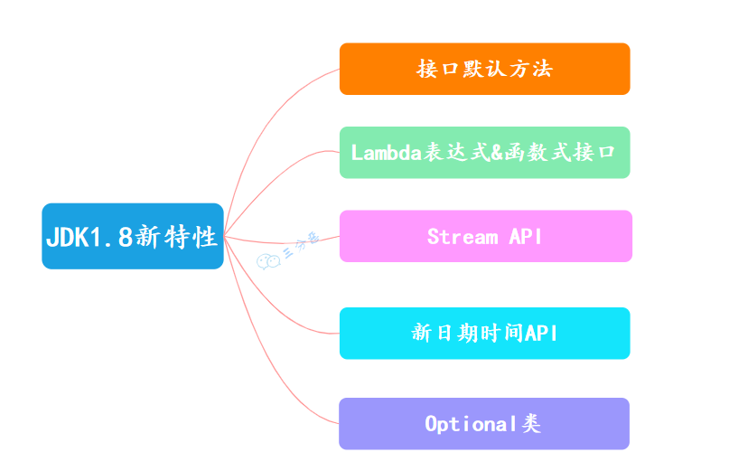
①、Java 8 允许在接口中添加默认方法和静态方法。
public interface MyInterface {
default void myDefaultMethod() {
System.out.println("My default method");
}
static void myStaticMethod() {
System.out.println("My static method");
}
}
②、Lambda 表达式描述了一个代码块（或者叫匿名方法），可以将其作为参数传递给构造方法或者普通方法以便后续执行。
public class LamadaTest {
public static void main(String[] args) {
new Thread(() -> System.out.println("沉默王二")).start();
}
}
《Effective Java》的作者 Josh Bloch 建议使用 Lambda 表达式时，最好不要超过 3 行。否则代码可读性会变得很差。
③、Stream 是对 Java 集合框架的增强，它提供了一种高效且易于使用的数据处理方式。
List<String> list = new ArrayList<>();
list.add("中国加油");
list.add("世界加油");
list.add("世界加油");
long count = list.stream().distinct().count();
System.out.println(count);
④、Java 8 引入了一个全新的日期和时间 API，位于java.time包中。这个新的 API 纠正了旧版java.util.Date类中的许多缺陷。
LocalDate today = LocalDate.now();
System.out.println("Today's Local date : " + today);
LocalTime time = LocalTime.now();
System.out.println("Local time : " + time);
LocalDateTime now = LocalDateTime.now();
System.out.println("Current DateTime : " + now);
⑤、引入 Optional 是为了减少空指针异常。
Optional<String> optional = Optional.of("沉默王二");
optional.isPresent(); // true
optional.get(); // "沉默王二"
optional.orElse("沉默王三"); // "bam"
optional.ifPresent((s) -> System.out.println(s.charAt(0))); // "沉"
- Java 面试指南（付费）收录的招商银行面经同学 6 招银网络科技面试原题：JDK1.8 的特性？
- Java 面试指南（付费）收录的联想面经同学 7 面试原题：Java 印象比较深的版本更新。
54.Lambda 表达式了解多少？
Lambda 表达式主要用于提供一种简洁的方式来表示匿名方法，使 Java 具备了函数式编程的特性。
比如说我们可以使用 Lambda 表达式来简化线程的创建：
new Thread(() -> System.out.println("Hello World")).start();
这比以前的匿名内部类要简洁很多。
所谓的函数式编程，就是把函数作为参数传递给方法，或者作为方法的结果返回。比如说我们可以配合 Stream 流进行数据过滤：
List<Integer> numbers = Arrays.asList(1, 2, 3, 4, 5, 6);
List<Integer> evenNumbers = numbers.stream()
.filter(n -> n % 2 == 0)
.collect(Collectors.toList());
其中 n -> n % 2 == 0 就是一个 Lambda 表达式。表示传入一个参数 n，返回 n % 2 == 0 的结果。
Java8 有哪些内置函数式接口？
JDK 1.8 API 包含了很多内置的函数式接口。其中就包括我们在老版本中经常见到的 Comparator 和 Runnable，Java 8 为他们都添加了 @FunctionalInterface 注解，以用来支持 Lambda 表达式。
除了这两个之外，还有 Callable、Predicate、Function、Supplier、Consumer 等等。
- Java 面试指南（付费）收录的招商银行面经同学 6 招银网络科技面试原题：Lamada 表达式的作用？
55.Optional 了解吗？
Optional是用于防范NullPointerException。
可以将 Optional 看做是包装对象（可能是 null, 也有可能非 null）的容器。当我们定义了 一个方法，这个方法返回的对象可能是空，也有可能非空的时候，我们就可以考虑用 Optional 来包装它，这也是在 Java 8 被推荐使用的做法。
Optional<String> optional = Optional.of("bam");
optional.isPresent(); // true
optional.get(); // "bam"
optional.orElse("fallback"); // "bam"
optional.ifPresent((s) -> System.out.println(s.charAt(0))); // "b"
56.Stream 流用过吗？
Stream 流，简单来说，使用 java.util.Stream 对一个包含一个或多个元素的集合做各种操作。这些操作可能是 中间操作 亦或是 终端操作。 终端操作会返回一个结果，而中间操作会返回一个 Stream 流。
Stream 流一般用于集合，我们对一个集合做几个常见操作：
List<String> stringCollection = new ArrayList<>();
stringCollection.add("ddd2");
stringCollection.add("aaa2");
stringCollection.add("bbb1");
stringCollection.add("aaa1");
stringCollection.add("bbb3");
stringCollection.add("ccc");
stringCollection.add("bbb2");
stringCollection.add("ddd1");
- Filter 过滤
stringCollection
.stream()
.filter((s) -> s.startsWith("a"))
.forEach(System.out::println);
// "aaa2", "aaa1"
- Sorted 排序
stringCollection
.stream()
.sorted()
.filter((s) -> s.startsWith("a"))
.forEach(System.out::println);
// "aaa1", "aaa2"
- Map 转换
stringCollection
.stream()
.map(String::toUpperCase)
.sorted((a, b) -> b.compareTo(a))
.forEach(System.out::println);
// "DDD2", "DDD1", "CCC", "BBB3", "BBB2", "AAA2", "AAA1"
- Match 匹配
// 验证 list 中 string 是否有以 a 开头的, 匹配到第一个，即返回 true
boolean anyStartsWithA =
stringCollection
.stream()
.anyMatch((s) -> s.startsWith("a"));
System.out.println(anyStartsWithA); // true
// 验证 list 中 string 是否都是以 a 开头的
boolean allStartsWithA =
stringCollection
.stream()
.allMatch((s) -> s.startsWith("a"));
System.out.println(allStartsWithA); // false
// 验证 list 中 string 是否都不是以 z 开头的,
boolean noneStartsWithZ =
stringCollection
.stream()
.noneMatch((s) -> s.startsWith("z"));
System.out.println(noneStartsWithZ); // true
- Count 计数
count 是一个终端操作，它能够统计 stream 流中的元素总数，返回值是 long 类型。
// 先对 list 中字符串开头为 b 进行过滤，让后统计数量
long startsWithB =
stringCollection
.stream()
.filter((s) -> s.startsWith("b"))
.count();
System.out.println(startsWithB); // 3
- Reduce
Reduce 中文翻译为：减少、缩小。通过入参的 Function，我们能够将 list 归约成一个值。它的返回类型是 Optional 类型。
Optional<String> reduced =
stringCollection
.stream()
.sorted()
.reduce((s1, s2) -> s1 + "#" + s2);
reduced.ifPresent(System.out::println);
// "aaa1#aaa2#bbb1#bbb2#bbb3#ccc#ddd1#ddd2"
以上是常见的几种流式操作，还有其它的一些流式操作，可以帮助我们更便捷地处理集合数据。
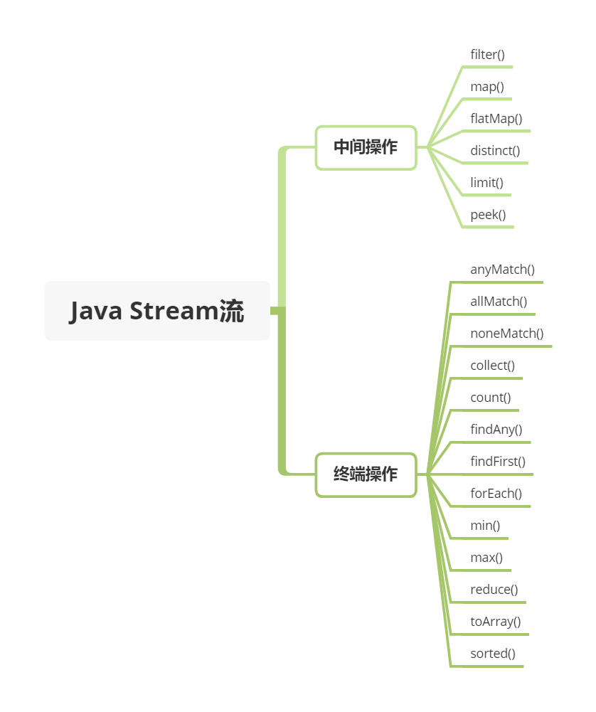
2024 年 12 月 30 日第二版优化结束。